The publication that you find in front of you is called ‹The
Destructive Character›, written by the Dutch electronics pioneer,
multimedia artist, and theorist Dick Raaijmakers. In this preface
I would like to sketch a short history of this text as well as the context in which it was written.
In 1989, Raaijmakers was a guest curator for the exhibition ‹Anti
Qua Musica› in the Haags Gemeentemuseum. The exhibition
had as its subtitle: ‹The ‘open’ musical instrument in art and anti-art›, and comprised, according to Raaijmakers’ introductory
text in the catalogue, two ‹fields›: ‹the field of the musical instrument destroyed for artistic reasons and the field of the modified
musical instrument. […] All representatives on display share the
same property: they are ‘open’.›1 The contributions written by
Raaijmakers for the catalogue, such as ‹The Provocative Screw›
and ‹Festum Fluxorum›, would later serve as the basis for the last
two chapters of the 1992 typescript ‹Small Mechanics of the Open
Form›. In the same year, a selection from these chapters was
printed in the literary magazine Raster.2
As a result of a renewed performance during a three-day Fluxus
festival in the Centraal Museum, Utrecht of what Raaijmakers
refers to as his ‹very first real work of art›, his 1959 Pianoforte,
Raaijmakers decided to rewrite the last two chapters of the as yet
unpublished typescript to distribute among several colleagues.
In one of the accompanying letters he writes: ‹Bringing this primal child literally back to life, more than forty years after, gave
me the idea to glue back together the shards of the dismantled
and fragmented story from 1992 on the relation between destruction and art and to republish it under the title ‘The Destructive
Character’.›3
Raaijmakers adds, ‹The title has been borrowed from a text by
Walter Benjamin from 1931.› This is not only motivated by the thematic overlap between the two texts, but also by the fact that just
like Benjamin’s, Raaijmakers’ text on destruction doesn’t solely
have an art historical, but also a social intention: ‹The most important motivation to do so is the fact that, although, and not only according to my own conviction, the theme of ‘destruction
and art’ is art historically speaking completely out of fashion, it
is however in a social and political sense more present than
ever, especially when considering the increase in destructive
violence and all those horrible attacks and social disintegration
around us.›4
Reflecting on our current times I do not think that this motivation
has lost any of its strength. Just like in the case of Raaijmakers,
Walter Benjamin’s short essay ‹Der destruktive charakter›5 (The
Destructive Character) was written under pressure of social and
political conditions of an economic crisis, the rise of Nazism,
and his inner struggle with the ideas of communism. In a letter
to his friend Gershom Scholem from October 1931, Benjamin
mentions the essay, describing it as a sketch of a banker friend,
Gustav Glück. On November 20, 1931, the essay was printed in
the Frankfurter Zeitung (Vol. 76, Nr. 863/4). The full version of
the English translation by Edmund Jephcott has been included in
this publication. Raaijmakers has emphasized several passages
with specific pertinence to his own text.
I would like to take the opportunity to thank those who have helped
me make this publication possible. First of all, Dick Raaijmakers
himself, who, against all odds and with immense patience and precision, has at length discussed with me both the text and the images included in this edition. I applaud his persistence. Also, I owe
my gratitude to the late Frans Evers, with whom I shared the first
ideas about this publication, but who unfortunately did not live to
see them materialize. I would also like to thank Remco van Bladel
and Freek Lomme from Onomatopee publishers for their engagement regarding the editing, design, and content of this book, and
John Van Houdt for proofreading all the English translations. All
footnotes in the text are my own.
1. dick raaijmakers, ed. anti Qua Musica. het ‹open› muziekinstrument in kunst en antikunst (exh. cat.). the hague: haags Gemeentemuseum/SdU Uitgeverij, 1989.
2. dick raaijmakers. ‹de provocatieve schroef›, in raster 60, cyriel offermans et al., eds. amsterdam: de bezige bij, 1992, 58–61; en dick raaijmakers. ‹het destructieve karakter›, ibid., 141–164.
3. Letter to Michael van hoogenhuyze, april 1, 2004.
4. Letter to hans Locher, december 14, 2003.
5. Walter benjamin. ‹der destruktive charakter›, in Gesammelte
Schriften iV, 1. frankfurt am Main: Suhrkamp, 1972, 396–398.
THE DESTRUCTIVE CHARACTER
Walter Benjamin
It could happen to someone looking back over his life that he realized that almost all the deeper obligations he had endured in its
course originated in people who everyone agreed had the traits
of a ‹destructive character›. He would stumble on this fact one
day, perhaps by chance, and the heavier the shock dealt to him,
the better his chances of representing the destructive character.
The destructive character knows only one watchword:
make room. And only one activity: clearing away. His need
for fresh air and open space is stronger than any hatred.
The destructive character is young and cheerful. For destroying rejuvenates, because it clears away the traces of
our own age; it cheers, because everything cleared away
means to the destroyer a complete reduction, indeed a
rooting out, of his own condition. Really, only the insight
into how radically the world is simplified when tested for its worthiness for destruction leads to such an Apollonian image of the
destroyer. This is the great bond embracing and unifying all that
exists. It is a sight that affords the destructive character a spectacle of deepest harmony.
The destructive character is always blithely at work. It is Nature that
dictates his tempo, indirectly at least, for he must forestall her.
Otherwise she will take over the destruction herself.
The destructive character sees no image hovering before him. He
has few needs, and the least of them is to know what will replace what has been destroyed. First of all, for a moment at least,
empty space—the place where the thing stood or the victim lived.
Someone is sure to be found who needs this space without occupying it.
The destructive character does his work; the only work he
avoids is creative. Just as the creator seeks solitude, the
destroyer must be constantly surrounded by people, witnesses to his efficacy.
The destructive character is a signal. Just as a trigonometric sign is
exposed on all sides to the wind, so he is exposed to idle talk. To
protect him from it is pointless.
The destructive character has no interest in being understood.
Attempts in this direction he regards as superficial. Being misunderstood cannot harm him. On the contrary, he provokes it, just
as oracles, those destructive institutions of the state, provoked
it. The most petty bourgeois of all phenomena, gossip, comes
about only because people do not wish to be misunderstood. The destructive character tolerates misunderstanding; he does not
promote gossip.
The destructive character is the enemy of the étui-man. The étuiman looks for comfort, and the case is its quintessence. The inside of the case is the velvet-lined trace that he has imprinted on
the world. The destructive character obliterates even the traces
of destruction.
The destructive character stands in the front line of traditionalists.
Some people pass things down to posterity, by making them untouchable and thus conserving them; others pass on situations,
by making them practicable and thus liquidating them. The latter
are called destructive.
The destructive character sees nothing permanent. But for
this very reason he sees ways everywhere. Where others encounter walls or mountains, there, too, he sees a way. But
because he sees a way everywhere, he has to clear things
from it everywhere. Not always by brute force; sometimes
by the most refined. Because he sees ways everywhere he
stands at a crossroads. No moment can know what the next will
bring. What exists he reduces to rubble—not for the sake of the
rubble, but for that of the way leading through it.
The destructive character lives from the feeling not that
life is worth living, but that suicide is not worth the
trouble
THE DESTRUCTIVE FORMATION
In case of an arrangement which is disturbed by destruction, two
parties come into play: the destroyer and, of course, the arrangement in question. Initially, both are at rest. The arrangement, because it has been ‹finished› and therefore calmly resides in the
world; the destroyer, because he is preparing his disturbanceoperation in seclusion. When the moment arrives, their rest has
come to an end: for the destroyer, because he must come into
action and is on the verge of executing his plan; for the arrangement, because its order, and therefore its rest, will be definitively
disturbed by the destroyer.
The action unleashed by the destroyer is experienced by the arrangement as a hit, even though this hit may be spread out over
time. As a result of the hit, the resting order is reduced to scraps
and pieces. Thus the order irreversibly deteriorates. Depending
on the nature of this destructive coup, the disturbance of the
order can work in two directions: outward or inward. In the first
case, the order explodes, and its pieces fly centrifugally—literally fleeing the order—into the wide world. In the second case, it
implodes, and its pieces, searching for a central refuge, collapse
centripetally. There’s no middle course: it’s either one or the other.
The actual execution of the hit as ‹action›, that is, in relation to the
rest that the arrangement was emitting just now, is extremely
brief and momentary. This briefness and momentariness is an important symptom of the destructive attack. But there’s more: as
an initiating activity, the hit does not only differentiate itself from
decay as a passive happening qua time—first hit, then fall—but
also, and especially, qua character. Immediately after his attack,
the destroyer does not desire to be related to the explosive or
implosive course of the decay. Such a constructively inclined attitude does not fit him. His attack was not in the least meant to
be warm and entertaining; entertaining in the sense of ‹close to
the order›, that is. On the contrary: the destroyer performs his
hit here aiming for a fall there (bomb attack), which he does in
a ‹cool› way. This here and there are typical for the formation
[slagorde] of the destructive character, and his being-cool only
adds to his profile.
Equally characteristic for the destructive character, is that immediately after the staging of his coup there is no way back for
the destroyer; he cannot undo his act by, so to speak, reversing his character. This ‹not being present› and ‹no way back›
determine the nature of the destructive event to a large extent.
That is why the destroyer and arranger are each other’s opposites.
Whereas the former does not desire to await the inevitable unfolding of his action, the latter is constantly ‹present›. Moreover,
for the arranger there is always a way back. For constructive action implies constant repetition, rehearsal, improvement and
learning. And what can this repetition be but the backtracking of
the way that the arranger had just covered, until any doubt about
the correctness of the way has been overcome, and any other
way has been excluded?
The destroyer does not wish to occupy himself with any of these issues. He acts, and doesn’t look back; for that’s just his ‹character›. (Strikingly, around 1806, Louis Napoleon1 thought that he
had to encourage the Dutch population with practically the same
slogan—‹Do good, and don’t look back!›—to forget the past and
focus on the future. This is striking, because through this slogan,
which undoubtedly was intended to have an educational aim, he
cleared the way for the early nineteenth-century ‹destructive
character› to proceed on its disorderly and anarchical course.
And this cannot possibly have been his intention. Perhaps, a ‹Look
back, and do good!› might have been more appropriate.)
1. Louis napoleon (1778–1846), King of holland (1808–1810) under emperor napoleon.
THE DESTRUCTIVE EFFECT
Destruction aims for what has been carefully ordered. The effect resulting from a destructive action is aimed at the destruction of that care; at obliterating it. That care then becomes
lost. The careful ordering has cost the arranger both time and
workmanship. (Which is also a form of time. For what else can
workmanship be but a repeated rehearsing and experimenting, stretched out over years, in order to be able to arrive ‹that
far› with arranging?) Conversely, as said, the destructive attack
takes no time. That’s what the one who is destructing—the destroyer—does literally ‹in no time›.
At the moment the destructive force strikes, these two times are so
to speak exchanged for each other. In one strike, the very brief destructive impulse neutralises all the time that has been invested in
the carefully constructed arrangement. Based on this unilaterally
concluded ‹transaction›, the destroyer succeeds in retrogradely
reversing the genesis of the order he has in hand to the moment
of its inception: the arranger can literally start all over again. It will
have become clear that the destructive character is by definition
in a hurry, and sees to it that the business is finished in his way as
quickly as possible. In order to have it his way, if need be, he forces this business, causing the civilised arrangement as well as the
creative energy invested in it by the arranger to be completely demolished. All that is left over are smashed, broken and pulverised
fragments of the once loftily organised order. The transaction between the destructive and the constructive does not only concern
the mutual exchange of times, but also of energies. If one could
in some way speak of a certain profit for the destroyer, it should
be found in the unleashing of the energy that was contained in
the order. At first sight, this energy appears to be released in an
unbridled way—as if it were a breach in a dike—benefitting the
destroyer just like that. It even looks as if he receives infinitely
more energy than the relatively little amount of energy he invested into the unleashing of his destructive labour. But that’s mere
appearance; in reality it’s different. At the moment of the destructive attack, the destructive energy immediately eliminates
all constructive energy that the arranger once had invested in
the order. The former energy annihilates the latter, which is forever lost for both parties. By the way, what in the world should
the destroyer do with this constructive energy, suppose it would
be released? Nothing, right! He is a destroyer, not a constructor!
The destroyer is primarily interested not in this constructive energy, but in the manner and speed of its release as a result of his
attack. Experiencing this release, undergoing it as a brief, let’s say
ecstatic, catharsis. That’s what his aim is! That’s just his character!
Destruction is exclusively related to what is brief, not to what is
lengthy: Walter Benjamin calls this a distinct feature of the destructive character. The destroyer has to make do with a spontaneous execution, even though he has many constructive
considerations and plans preceding the actual act of destruction.
A destruction operation, spread out over too long a period of time,
runs the risk of showing so many constructive features, that in the
end one could hardly speak of destruction. (E.g. a plane hijacking
which takes more time than initially anticipated, the hijacking can
easily result in an intimate fraternisation between hijackers and
hostages, that is, if the former don’t watch out…)
In our ordered society, destruction is condemned without discussion. We have equipped our immediate environment with many
valuable things, and these things are at risk whenever the destructive character is around. All these things are accumulations of
traditions, experiences, techniques and workmanship. We consider this accumulation to be our culture. The destructive character pre-eminently aims at releasing this ‹culture› from our things.
He does so without any qualification, let alone any permission or
whatever other form of commission from our side to do so. He is
not the ‹right man for the job›, we say. Only we are; owners, possessors and guardians of our things, and therefore of our culture.
In this regard, it is worth considering the following. The arranger is
the right man for the job at any time de-arranging the things that
he has arranged into a sensible whole. He de-arranges, in order
to release the energy previously invested by him in what has been
carefully arranged. He can and may do so, as long as this release
does not assume the character of a form of self-destruction in disguise. If he would cross this limit, he would look like someone who
first has arranged something with great care, in order to subsequently, without any initially apparent reason, attack and annihilate this with the same amount of force. Afterward, we consider
someone like that to be ‹beside himself› with rage, indignation, impatience or whatever. At that moment he was really ‹someone else›
in order to attack himself. If these self-attacks occur repeatedly,
we protect such a person against himself by isolating him from
the regular world. Again it seems that the ordered and destructive
attitude cannot appear in one and the same person unpunished.
And if, in spite of everything, this happens nonetheless, an unacceptable friction arises between both these qualities present
within this one figure. Outsiders would call him ‹sick›. ¶
DESTRUCTION AS GAME: FOUR EXAMPLES
In our society, as said, destruction is always condemned. Always,
but not all manifestations of it! Its nicest, and also most innocent forms are associated with ‹celebration› and ‹games›. By
giving four simple, but nevertheless telling examples, we will
deepen our discussion of the functioning of its basic mechanism.
Especially in the case in which the destructive character wants to
celebrate and play.
§3.1 The first example concerns the destructive mechanics of pyrotechnics. No pyrotechnics without a celebration. Whenever
our society has something to celebrate, something—preferably
something special—is sacrificed in the sense of ‹burned›, ‹annihilated› and ‹expended›. Once the celebration is over, no trace
of this value can be found. The only thing that remains is the
memory of the expenditure as celebratory event. A pyrotechnist, preparing a large-scale pyrotechnic display at the occasion of some planned activity, devotes the greatest care and just
as much time to the positioning of the ensemble of pyrotechnic
elements. When the celebration has reached its apex, he ignites the firework in a restrained and controlled manner; he
doesn’t do so impulsively, but perfectly prepared. Compared to
the ignition, the consequences are literally out of all proportion.
The amazement and enthusiasm of the on-looking audience is especially due to the disintegrating force with which all the energy invested into the pyrotechnic artwork—not only the energy of
the spectacularly igniting powder, but certainly also the energy of
the inventiveness and professional skill of the pyrotechnist!—is
released in a perfectly timed manner. The fire is literally working and is as literally released! Even though the whole spectacle
proceeds in an extremely controlled manner, it possesses some
essential features of a destructive action. For all energy evaporates and goes up into smoke; nothing constructive remains. This
is clarified by the juxtaposition of ‹fire› and ‹work›.
It can be stated that in our society, every destructive action incorporates a certain aspect of ‹fireworks›. No destruction without some
selfish objective in this direction. Each destruction has a celebratory element because of its singularity and irreversibility. Even
someone who is fully ‹beside himself› and taking his own life (selfimmolation), is for an important part aiming for fireworks in the
sense of a public disappearance, exchange, immolation and dissolution. He is concerned with the ecstatic sense that his attack is
singular and irreversible. And exactly because of that, because of
its radical nature, it will be long remembered by the people that
remain behind—i.e., us. In such a case, nobody escapes the fire
of the destructive character (fig. 1).
§3.2 We are addressing a totally different form of socially tolerated
destruction when we consider what could be generally called the
‹precarious balance on display›. Each shop shows its stock of a
certain product—preferably tin cans—by displaying them in towering stacks before the costumer. Even though it’s a precariously
balanced display, it’s still a tower! As long as no one bumps into it,
such towers can last for eternity. One can hardly think of a bigger
contrast than between these towers and fireworks. Whereas the
ignition of fireworks always takes place at a predetermined time,
absolutely no one expects the organised and orderly collapse of
a stack of soup cans in the presence of an on-looking audience.
There is a second remarkable difference. Before the fireworks
are ignited, one hardly notices anything of its spectacular potential. But in case of man-sized stacks of tin cans, one can speak of
a carefully directed mix of storage and artwork, and therefore of
usage by hand and usage by eye.
The intention of the precarious display of a certain product
which the shop owner never tires of selling, is clear: a single
bump by third parties is enough to annul all of the care invested into this display in one fell swoop. As long as this bump fails to arrive, the display radiates this care with full force. The shop
owner could also have cast the stack of cans into a corner, but
this would not only diminish the status of his merchandise, but
also the status of his honourable clientele. Thus his care is not
merely limited to the can, but extends to the costumer too; everything the shop owner does and shows confirms this. (On closer
inspection, this man is an altruist pur sang.)
Even though the precarious balance is meant to be turned over, it
doesn’t ask for it. At most, it all involves a silent, nearly perverse
temptation. Because it’s a game!—a game based on an extremely refined contract between the stacker and potential over-turner. The aim is to show the merchandise first, before immediately
continuing with bumping (read ‹grabbing›). The game intends to
emancipate the consumer so that he feels elevated high above
any immediate grabbing. The image of the artistic, towering stack
invites him to tower above the one obscure thing that he wants to
possess. Just compare this with the way in which the same shop
owner stages his annual clearance sales: everything thrown together and literally on grabbing-height; just look how the emancipated, civil culture bursts like a bubble and is thrown into a
scramble… (Or in the case of street terror, when shop windows
are smashed and beautifully displayed products are ‹just› up for
grabs. Just look at the crowd grabbing, look at how what is ordered—our ‹order›—is thoroughly destroyed…)
Seeing and grabbing differ from each other. At first, the precarious
balance on display desires to address the consumer on the level
of the ‹eye›. Subsequently, it’s the ‹hand›’s turn to be stimulated.
The client is allowed to look at the product and desire it, but not
to immediately touch it, let alone take it home. That’s only later,
when he is going to pay. Accordingly, the desired mass product
isn’t obscurely sneaked into his hands under the counter, but
is handed to him in full daylight from a shelve that is specifically
equipped for the product concerned. From the shelve, the wrapper of the product smiles at its prospective owner, and promises
him quality, guarantees him inexhaustible use, and holds out the
prospect of points and prizes, once he has decided to purchase
it. Once the deal is struck, the client jumps at the product that
started it all and grabs it. On his way to the counter he leaves
the tower with a hundred copies of his ‹original› unharmed, pays
without any further ado. From the moment the shop door shuts
behind him, he knows that the game is over. (Of course not for
the shop owner—who keeps on playing—but for the client.) §3.3 At fairs we encounter an interesting variant of the stacking
21
of cans. Whereas it is usually the case that such stacks are not
supposed to be knocked over, we are here explicitly invited to
do just that. The reason that it is allowed at fairs, but prohibited
elsewhere in society, is to be found first in the payment before
we can play, and second in the award of a prize afterward, in the
case a certain number of cans have been successfully knocked
over. Here too one could speak of a contract between two parties. Every time we have successfully knocked over the cans, we
can see, without any protest from our side, the owner patiently
and orderly restoring the collapsed tower acting as if nothing has
happened; even if this happens for the umpteenth time in one
day. His whole behaviour shows that he feels no responsibility
for any of our throwing and hurling. Moreover, he does so in an
extremely practiced, if not ‹bored› manner. (Against our excitement he places his indifference; against our smile he places his
barely suppressed yawn, but that’s also part of the ‹game›.)
That potential throwers feel like knocking over cans at fairs, and are
willing to pay for it, is due in large measure to the smashing sound
accompanying the cans tumbling down. That sound reports noisily, because in a truthful way, about the fact that the thrower in
question has succeeded in thoroughly disturbing the stacked
order. The thrower gets his sound ‹for nothing›, judging his spontaneous reciprocation of a, say, archaic anti-sound: a triumphant
cry in the direction of the owner of the stall and/or the bystanders.
At that moment, the thrower forgets that for the production of this
one cry he had to pay generously only a few moments ago. For
everything has its price, even though in this case the price seems
totally out of proportion.
Auditorily, we do not always experience unexpected falling sounds
as disorderly. This is dependent on who is causing them: we
or third parties. When we are busy with some technical job,
the sounds that we are making while doing so form an intrinsic part of finishing the job. These sounds, no matter how irregular and unexpected they sometimes may be, accompany
our activities and provide a reassuring context. Moreover, they
are not isolated, but are usually embedded in the whole of social noise resulting from all of our actions and movements. It is
this constantly present noise that lowers our always watchful
threshold of perception [waarnemingsdrempel] and therefore grants us some rest. (For example, the philosopher Ludwig
Wittgenstein used to place a turning fan in the corner of his study, not because of the breeze, but so as to produce a background of
noise. This noise—this organised silence—shielded him from
the many irrelevant, but therefore sometimes all the more annoying, noises outside; noises trying thoroughly to disturb the quietness of his room, sounding like sledgehammer blows.)
At fairs the relation between silence and sound is essentially different. It is a place where everything evolves around noisiness. It is a
place where we are willing to pay a lot for the unleashing of things
clattering down with great ostentation and all associations that
come with it. The threshold of perception is high to such an extent, that nothing can happen to us. And whatever does happen
to us, we—we throwers and noisemakers—have helped initiate.
We cause this noise to ourselves so as to exceed the noise of onlooking third parties.
§3.4 A higher variant of the randomly knocking over of stacked
cans is called ‹bowling›. Not only the wooden pins, but also the
sounds with which they collide are of a higher order than is the
case with cans. Through an ingenious system of ropes and pulleys, the pins can be pulled straight after each roll. Thus they are
placed back in order at the same speed with which we knocked
them over. This cannot be possible, but that it is, is proved by the
entrance fee or membership payment for the bowling club. We
pay to be allowed to disturb, time after time again, an essentially
single and irreversible order. (More or less like angry babies who,
driven by a comparable feeling of lust, do not tire of throwing over
the towers of building blocks. They do so with an indefatigable
ardour matching the enthusiasm of the well-intending public rebuilding them indefatigably for the baby’s eyes.) By associating a
simple scoring system with can throwing, and a complex one with
bowling, we can easily check on the score board the number of
times that we have successfully destroyed. Immediately after the
game, this score is exchanged and settled for prizes or hard cash.
The mechanism of these types of transactions shows clearly how, in
the case of those perfected games, one can introduce a hidden,
but definitely present destructive element in order to boost and
speed up the game. Without the ‹fire› of the destructive character
there’s no game, no gain and no loss! (Viewed thus, sport is probably the most sublimated form for exchanging constructive against
destructive energies. ‹Sport› is just another term for that.) ¶
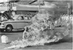
GAME VERSUS CERTAINTY
The moral of the story is the following: the sanctioning of essentially inadmissible destructive elements within our constructively
disposed society is based on the fact that we are willing to pay
for their admission. All interacting economic, ethical and prestigious forces involved in such a payment, may to a certain extent,
euphemistically speaking, be gathered under the denominator ‹game›. Like no other, games keep these forces in check and
combine their mutual relations. Games do so by expressing the
values of these forces in mutually comparable variables. Through
the rules of the game, these forces become, let’s say, ‹parametricised›. Storing profit and suffering loss thus only differ from each
other qua sign.
Whereas in daily life ‹defeat› means an irrevocable form of death
from which no return is possible, accepting ‹defeat› in the case
of a game has no other result than that some points are deducted
from a certain acquired ‹gain›. In this respect, playing a game is
something of an abstract occupation exclusively aimed at scoring
points, even though wanting to gain points at all cost sometimes
results in a true battle for life and death.
In order to win a game we first wage something of value—money, in
most cases. No game without a wager. This wager is by definition
a form of acquired order. This order is a piece of personal property. Through the game, there is a chance that this order is destroyed, or otherwise fully dissolved into completely nothing. The
gain of such a ‹nothing› in exchange for losing a piece of personal
property is amply compensated for by the pleasure we get from
the game. This pleasure compensates the loss; this too is a form of
the sophisticated transaction within the game. By the way, under
all circumstances we desire to pay the correct price for the experience of pleasure. That is, if those circumstances are subjected to
the rules of the social game. (An extraordinary case is when it is
about gaining pleasure without any social context; pleasure in itself, pleasure on a deserted island. This impression of things however is not so much extraordinary, but rather unthinkable. There’s
nothing to gain there and then, not even pleasure. Because the
experience of pleasure requires a certain context, and this context implies a certain ‹game›. Without game no pleasure, without
pleasure no game; that’s what it generally comes down to.)
After the game has ended, and after our potential loss, we—players—return to our safe homes. That’s where our real possessions are, firmly anchored in the order that we call ‹household›. By
the grace of that certainty, we take delight in casually displaying
certain representative elements of our possessions on unstable
consoles, cupboards, shelves and semi-accidental protrusions.
Casually, to allow our guests and visitors to let their attention wander off, nonchalantly, into the direction of our notably less casual,
for in all respects ‹mature›, mind.
In spite of, or rather, thanks to the earthly and transient nature of
our possessions, it is well-nigh obvious that none of what is on
display may be bowled over; not by us, let alone by third parties.
That we are definitely not wagering. On the contrary. We insure
ourselves against such an unimaginable disaster! If unexpectedly
something like that would occur, we know ourselves to be literally assured that our insurers will return all our belongings—like
pins—to their fixed spots in no time. The mechanism of game
versus certainty has been fully adjusted to that purpose.
When things come to a head, we don’t choose for games but for certainty. When the destructive mechanism tries to penetrate our
stabile existence in all remote corners and holes, we immediately declare war on it. (Whether that violence be of natural or personal origin is of no concern.) If after such a penetrating attack
peace has returned, we put everything to work to restore the disturbed balance between game and order—between risk and certainty. We constantly try to assure our friends and acquaintances
how we have firmly decided from now on to maintain the balance
we regained,—and as soon as we are done with our outburst, we
once again give in to the temptations of the game and the risks
that come with it. And so on, and so forth. ¶
VIOLENCE
It has been stated above that the opening of a closed order is exclusively reserved for ‹the designated person›. The best person
imaginable is of course the one who previously closed what has
been ordered and completed, the arranger that is. Or else it can
also be someone who in his turn is appointed by the arranger: a
sort of professional opener, literally a dis-mantler.
The absolute antipode of cautiously opening something which has
been carefully closed is violently breaking it open. There are two
properties characterizing the use of violence. The first one is that
the opening is effected with literally one blow. The second one is
that this blow is dealt by third parties—bystanders, let alone ‹burglars›. Dealing a single blow implies in all cases the involvement
of third parties. The blow dealt by the arranger is different; it is
not executed haphazardly, but first meticulously prepared by him.
It’s not the blow as such that counts, but the time span preceding
it. That’s exactly when the arranger can profit from the occasion
first to analyse, rehearse, repeat, improve, slow down, in short, to
consider elaborately in thought the blow before moving into actual action. The violent blow dealt by third parties is by definition
‹hard›, for unexpected. The one dealt by the constructive arranger
is ‹soft›; it has been considered first, no matter how hard this soft
blow may sometimes hit. Nevertheless, the occurrence of violence
does not always imply an inexorable hardness. There are necessary nuances that we have to be acknowledge. For example, in the
performance of the destructive character Walter Benjamin distinguishes brute (roh) and refined (veredelt) violence. To paraphrase
this idea: he distinguishes destructive and constructive violence.
Without a doubt the most refined and softest appearance that the
destructive character can take on is the one of the aforementioned disassembler at the moment he is going to disassemble something. Whenever there is disassembly, the destructive
character proceeds in a remarkably organised manner. He takes
ample time for his cautiously executed ‹violence›. For us that’s
enough reason to inspect this remarkable, soft form of destruction a little bit closer.
DISASSEMBLY(1)
A constructor deciding to provide his recently finished construction with an optimally fitting instrumental appearance, doesn’t
do so for himself, but for third parties. He considers this instrumentation to be a form of human interface allowing third parties
to enter into contact with the actual ‹inside› of the construction.
A technical apparatus, a tool, a machine, gear, equipment and of
course an instrument is the result of the entire instrumentation.
They are all typical representatives of closed forms, because they
are, from now on, rightfully ‹in order›.
The qualification ‹closed› guarantees the reliable, practical functioning of the efficiently instrumented construction. However, whenever she 2 doesn’t work properly, breaks down, or has to be regularly
maintained, she has to be literally and figuratively opened. In that
case, the constructor has to take care that his construction not
only can be easily and efficiently dis-closed, but also—shortly
after—closed. (For example, in the case of firearms, that they can
be opened effortlessly and preferably in no time is a fundamental
characteristic of the essentially closed nature of this type of construction.) Thus repair and maintenance are the two main reasons
for opening originally closed constructions. The measure of efficiency with which in daily practice a user may execute this opening, determines the quality of the construction in question.
Though repair and maintenance are related, their difference is essential. Periodically maintaining a construction is in all respects
advisable in order to safeguard its long-term functioning. On the
contrary, the repair of a malfunctioning construction only happens once. It’s undeniable: repair is the answer to the being-ill
of the construction. She doesn’t function well. One or the other
component is defect, broken, got jammed, or has otherwise become unreliable and needs to be replaced by a healthy specimen.
Maintenance is different; it has to do with warmth, love and emotion. It is precisely this sort of emotional things that only obstruct
the adequate accomplishment of repairs. (For example, in case of
a surgical procedure, a surgeon sets his affective feelings for the
‹patient as human being› aside, in favour of a more equipmentally
[gereedschappelijk] inclined warmth, love and emotion for the
interior work of this patient.) A special hybrid form between maintenance and repair is called
diagnosis. Someone who maintains his construction well, also
pays attention, with half an eye and half an ear, to the state which
it is in. And at the slightest sign of hampering, he formulates a
first possible diagnosis. Viewed thus, a diagnosis is actually a repair, executed not in reality, but in the head of the diagnostician.
Or rather: executed retrogradely. The brainwork starts at the
moment the construction will finally be working safe and sound,
and finishes at the present state of hampering.
Most technical constructions with an explicitly instrumental character need regular maintenance. Their being-instrumental requires
so. Constructions, the parts of which move regularly with regard
to one another or with regard to the surrounding world, or are
otherwise in a active working relation, can be divided into three
categories as regards their sensitivity to maintenance. The first
category never requires maintenance; incidental repair, but that’s
of a different order. The second category requires constant maintenance, and the third category is, mostly for practical reasons,
somewhere in the middle. In all three cases maintenance means:
the creation of the necessary conditions for technical constructions to keep functioning well. In other words, maintenance is
needed to keep a healthily working device healthy, and in this respect it is of a preventive nature.
Any construction in need of regular maintenance, desires that this
is taken care of by her owner. Because he, and nobody else, is
‹the designated person› to do so. For example, a musician who
is used to maintain his musical instrument himself, never leaves
this to third parties, and he wouldn’t dream of parting with his instrument for even a moment. Only a periodical service, like the
tuning of pianos, is delegated to specialists. But all other, more
intimate instruments like strings, wind instruments, and also percussion are assured of the unremitting care of their players.
Weapons, musical instruments, clocks, surgical tools, cars, motorcycles and kitchen appliances are good examples of maintenance
sensitive constructions. However, when it comes to specialisation,
division of labour, teamwork, hierarchy, and so on, we have to interpret the concept ‹owner› in a proportionally liberal manner.
Especially in case of cars, the regular maintenance is nearly fully
delegated to specialised garages. With one exception: collectors
of antique automobiles devote an unremitting, warm, controlled,
and especially joyful and highly personal care to have their already out of date cars literally survive—trying to carry them beyond their ultimate age limit. A true symbiosis of owner and
construction lies at the basis of the devotion of this ‹warm› care.
Such a symbiotic merging of ‹owner› and ‹construction› is warm, intimate and sensitive, and it seems as if the construction in question
wants to reciprocate and honour this union with a similarly warm,
intimate and sensitive attitude. An owner who uses a construction
as regularly as he maintains her, substantially contributes to the
continuation of their intimate bond; yes, this even forms its condition! Everything depends on a natural, regularly returning takingapart and putting-together of the construction; a care-taking that
qua ‹pattern› can best be compared with the organic arsis–thesis
movement of the pronouncing and singing of texts and melodies.
Actually, repetitively taking constructions apart and putting them
together is related to the way in which we are just as repetitively
breathing to stay alive. By having these technical beings ‹breathe›
correspondingly, we assure them a lengthy and successful existence in our world. ¶
2. raaijmakers considers constructions to be feminine. see dick raaijmakers. method, edited and translated by vincent W.J. van gerven oei. eindhoven: onomatopee (2009), §5 et passim.
DISASSEMBLY(2)
In a world of maintenance, assembly and disassembly relate like
yin and yang. This is in no way contradicted by the fact that assembly is usually reserved to factories, putting together technical constructions in huge numbers and leaving disassembly
predominantly to individual repairmen and small workplaces.
Assembly aims for the already anticipated final form. The assembler works toward it, as it were, blindly. In comparison with
assembly, disassembly means to retrogradely taking apart what
has been ordered peacefully and quietly, until nothing remains
but a number of individual small sub-final forms. As time goes
by, these are seemingly scattered around the disassembler, randomly placed on tables and on the floor. If we didn’t know better,
and would unexpectedly enter his workplace, we would think that
we were dealing with a designer, not a disassembler. The presence of diagrams, charts, and working plans only confirms this
first global impression. But if we look closer, we see from the direction of the disassembler’s actions what he has been aiming
at: not the creation of single copies, but granting second lives to
mass products that have succeeded already a long time ago and
which have proven themselves, one by one, capable of dealing
with a long (new) life.
There are constructions which are not supposed to be disassembled.
Once assembled, never disassembled. Whenever a manufacturer
puts together a number of parts into a complex whole, this does
not mean that this constellation can easily be disassembled some
time after into exactly the same spare parts. There are even assemblages that are explicitly meant never to be disconnected
once their components have been combined. These components
are condemned to each other for as long as they live. They form a
bond that has been designed to last for years.
An Audion tube is a good example of such a rigidly solid assemblage of a number of parts, which is almost not supposed to be
disassembled. When it fails, it should be an absolutely irreplaceable and singular type, if one nonetheless wants to decide on
an operation. Usually, a failing radio lamp is replaced by a new
specimen and mercilessly thrown away. That’s the way it goes in
our consumer society, in which these types of hermetically closed
constructions—these perfect ‹metaworlds›—are just thrown
away… (Not to mention their contemporary equivalents, suitably
called integrated circuits.) ¶
DISASSEMBLY(3)
The American writer Robert M. Pirsig has extensively dealt with
the essence of the maintenance of technical constructions in his
book Zen and the Art of Motorcycle Maintenance: An Inquiry into
Morals.3 The author shows the mechanics of the symbiotic relation between the user and his motorcycle at the moment the
motor needs to be worked on, because ‹something› isn’t working well. A sort of maintenance, but more in the direction of repair. Only when there’s not only something inside the motorcycle
that’s ‹stuck›, but also, let’s say, inside the disassembler, the working of said mechanics becomes fully clear. The disassembler is
trapped, and doesn’t know what to do anymore. There’s no way
ahead for him, he is blocked. The symbiosis is broken and both
members have become strangers to each other.
Pirsig distinguishes three levels on which this blockage can occur.
The first one is the level of affective behaviour: that’s where values come into play. The second one is the level of cognitive behaviour: this concerns the knowledge of the disassembler. The
third one is the level of psycho-motorial behaviour which involves
reparative action. Furthermore, Pirsig distinguishes blockades
due to, as he puts it, ‹egoism› from the disassembler’s side: in this
case he is too dominant, he is not open-minded, he knows better, and the motor cannot keep from seeming to resist and withstand the disassembler’s intentions. Or due to ‹fear›: this is the
opposite of egoism, namely the fear to start a job, the fear of not
being able to fix the problem, and so on. Or due to ‹boredom›:
no pleasure in one’s work, no interest, acting automatically, just
doing whatever. Or due to ‹impatience›: a very dangerous blockage because it can turn into an initially unintended destruction;
in that case nuts that are stuck are approached with violence and
only get stuck even more, hammers and tongs get involved and
are used improperly, etcetera.
In any case, Pirsig devotes much attention to bolts, screws and nuts
that are annoyingly stuck. They are not supposed to be stuck, as
they serve to allow for disassembly, maintenance and repair. You
have to be natural at screwing bolts up and down. If you cannot
do that, you’re lacking in kinesthesia: your muscles are insensitive.
You don’t have the feeling for the elasticity of the material involved, and are therefore unable to differentiate between a bolt that has
to be tightened until it is completely stuck, perfectly tight, or
‹until it’s home›. You also lack a feeling for the relation between
what is occurring on the surface of the construction and what is
happening immediately behind it.
The reason for mentioning Pirsig’s book here is because in it he
has managed inimitably to articulate things about assembly, disassembly, maintenance and repair pertaining to technical constructions. There are enough technical publications explicating
how certain constructions have to be disassembled or repaired.
But both its psychological and ethical side—when it’s about the
values of maintenance work in relation to more general moral
principles pertaining to life, and, let’s not forget, when dealing
with technique connects to dealing with more artistically oriented matters—, are never mentioned in those books. The second
reason is that in light of Pirsig’s text, we can quite accurately determine the border between a perfectly executed disassembly of
an essentially closed construction (such as a motorcycle, even
though all its parts are beautifully, ‹openly› displayed and therefore perfectly in reach for any maintenance work) and the moment this disassembly turns into pure destruction,—when there’s
a war between the object of disassembly and its disassembler.
Pirsig’s description is an indispensable reference for correctly determining the manner and reason of this transgression. ¶
3. robert m. pirsig. Zen and the art of motorcycle maintenance: an inquiry into morals. new york: morrow (1974).
DISASSEMBLY(4)
Most handbooks in the field of maintenance and repair are mainly dealing with the ‹surface› of technical constructions—namely
the face through which they are operated. Nevertheless, every
construction standing in front of us fully completed offers not
only surface, but especially also ‹depth›, namely, the depth of the
history of her development. Especially to technology museums it
matters a great deal to address this evolutionary depth. Hence
they do not shy away from showing us the construction’s interior
work in a completely opened state. If we position ourselves right
in front of such an opened construction, an interaction is started
between us and the construction; an action allowing us to piece
together her view [beeld] bit by bit.
With ‹view› we do not so much intend the external view of the construction in question—some sort of visual surface view, no matter how open that view may be—, but the total of all aspects that
have led to the development of exactly this construction. This
‹meta-view› is very layered and has to be seen as an aggregate of
all collected images in which the construction has at some point
been ‹thought› by her constructor: from the first inspired idea
to numeric calculation, from experimental design to practically
working model, from inventory to technical manual. Again: this
meta-view does not only concern the view of the final construction, but also and especially offers a look into all stages that preceded her final form.
Especially in the case of explicitly domestic appliances, the external view can sometimes lead to very confusing assessment situations. All the more because the designer puts everything to
work to show off the final mantle in which he desires to envelop
his design as beautifully as possible. (Advertisement.) With her
gleaming contours and shining colours, the construction tries to
persuade us to accept her final form as definitive. For, the more
she is ‹finished›, the more her view will correspond with the external contour of the construction. Hence the most natural view of a
completed construction is the construction herself, when, at the
moment she is ‹finished›, she is triumphantly raised up. Without
that display, shop windows, as well as technology museums would
barely have the right to exist.
As said, the view of a technical construction needs to be interpreted as a sum of all the forms of existence that the construction has
lived through, from the first sketch on paper until the last definite design. Before the construction is ‹finished› and is able show us
her definitive form, she has led a life as, consecutively, an idea, a
concept, figures, a diagram, a sketch, an exploded view, an inventory, a set of parts, and finally as a tradable device, appliance,
instrument or tool equipped with manuals. Thus, every completed construction carries her own genesis along, like some kind of
survival kit. At the moment the construction breaks down, this
kit unfolds like a parachute, and her existence literally hangs by
a thread. At that moment, her whole genesis is inverted and at
once she appears to have led a layered existence. This layered
existence lends every technical construction an unsuspected
depth, that ‹we› had long since forgotten.
To give an example, a car which has stopped working undergoes in
a garage a sort of inverted sequence of treatments. Like a film
playing backward, it starts with taking apart certain parts that are
declared to be ‹sick›, and finishes by verifying the disassembly by
means of workshop instruction manuals, lists, diagrams and instructions. The time machine is working at full speed when the
owner is told that the defect part is no longer available—doesn’t
‹exist› anymore—is ‹out of stock›. Through this simple message,
the car is suddenly reduced to his state of existence before his
conception, that is, the state of an idea.
In a comparable way, in a hospital a ‹malfunctioning person› is split
up into temperature curves, measurement scales, X-ray images,
doses of medicine, diagnoses in jargon, not to mention operational disassemblies, transplantations and other sorts of interventions. The existence of the patient turns out to be a sort of ‹kit›,
from which, under the right conditions, it may be possible to put
together something that’s functioning well. Also in the case of this
patient, when it really comes down to it, his whole existence, until
now hidden in his depths, unfolds like a parachute, and the stratification of his life appears. From that moment on he literally lives
in a reverse direction, and he looks into his deepest past. If he is
heavily ill, his uncertain future becomes more and more occupied by this secure past. And when he dies—everybody is familiar
with this image—he passes through the phase of his birth, toward
limbo, toward formlessness and/or disorder. This holds for humans, and in certain respects also for technical constructions.
It’s becoming clear now: when a final construction malfunctions—becomes ‹ill›—and stops working, her user is from one
moment to the other confronted with an in-depth view [dieptebeeld] which has remained hidden thus far. Before, he was only concerned with her surface; it wasn’t necessary to do more.
Literally in touch with that face, he operated and controlled her
working parts. Thus, without dirtying his hands on her, he could
enter into contact with her interior work. He used her surface as
an intermediary. However, at the moment that the construction
malfunctions, her user literally has to halt and discover the reason of her failure. He has to fathom her depths,—in the direction
of her past, toward what’s ‹in her papers›. To do so, he takes up
the necessary schemes, tables and diagrams and gets to work.
This more or less conceptual depth of final constructions is accompanied by what could be termed ‹evolutionary depth›. This
depth informs us about the way in which these constructions have
evolved qua form; not from idea to object, but from form to form.
The development of any thinkable construction has been preceded by the development of a number of earlier constructions.
The best properties of previous constructions are as it were transferred into the last, most recent, construction. In other words, this
‹last› construction carries with her the genetically ‹best› qualities
of her ancestors, and hopes to have conquered and eliminated
all of their ‹bad› qualities. (Advertisement constantly stresses the
producer’s aim to offer products that are even better and more
sublime than the previous ones. In the new product, everything
that used to be great about the former ones not only seems to
have been optimised, but also enriched with something new,
something extra.)
It is a beautiful sight to see this stacking of useful ancestral genetic
qualities in the final construction, when this most recent shoot of
the stem is disassembled and all kinds of details from a far and
forgotten past are brought to light. These details cannot be improved upon, they are timeless and lend the construction in
question a unique, because hidden, cultural surplus value. Thus,
both—conceptual and evolutionary—‹depths› determine the existence of all thinkable technical constructions. Both depths are
at first sight invisible, but indispensable for the welfare of the construction’s future—and of course for curing her possible future
diseases. ¶
EXPLOSION
The art of a successful disassembly depends on the level of the
disassembler’s insight in the way the construction is fit together.
Although he can ‹just› start disassembling whenever he is for the
first time confronted with a construction completely unknown
to him, it will soon be the case that in certain moments there is
no way out: he doesn’t know whether he has to turn a screw left
or right, whether he can carefully fold something away, knock
it open, whether he can temporarily close something and more
of these types of minuscule initiatives. In the long run he will get
stuck just like the malfunctioning construction that he is dealing
with. And if he also loses his patience, the danger of an uncontrolled manoeuvre, straining things forcefully, will be more present than ever. He will run the risk of transgressing a certain limit
of carelessness, causing his imagination immediately to lose grip
on the original relation between the construction’s parts. And
before he knows what has happened, he will be left with a number of ‹spare› parts, randomly spread around him without any
system or coherence. At that moment, the initially well controlled
operation instantly turns into an explosion that is out of control.
The construction experiences an extremely quickly inverted genesis and she finds herself travelling back to the first phase of her
life, formed by a cluster of spare parts, code numbers and inventories, namely the phase of ‹stock›, to put it tersely. And the repairman, he can kiss his construction goodbye!
When the disassembler loses his grip on an ongoing disassembling
process, the view of the opened construction looks a lot like a socalled exploded view: a graphic way of drawing which represents
a technical construction three-dimensionally in fully disassembled state. To make this clear, I present three examples below of
different ways of picturing disassembled constructions according
to the method of the exploded view.
The first example (fig. 2) shows the way in which a tape recorder from
the sixties is literally fit together, both mechanically and electrically. Tape recorders can be interpreted as collages of functions,
accessories and components. Owing to the limited interior space
offered by these types of living room devices, it was absolutely
necessary to squeeze all the required electrical and mechanical
parts in that one space, onto and into each other, even though
fundamentally they are only matched with difficulty. The result
was that any venture in taking the tape recorder apart at a later stage, simply had to tend toward vandalism. Apparently, the
manufacturer hadn’t foreseen the decollage of devices like this
tape recorder. Inadvertently, but no less suggestively, the exploded view gives the impression of an irrevocable and irreversible
process of expansion. And an initially unsuspecting repairman
would play the role of desperate ‹back-pusher›.
To be able to clean or replace certain parts of technical constructions from time to time, it is necessary that their disassembly is
taken into account. For example, a regular disassembly of a car’s
gasoline carburettor (fig. 3) is a basic condition for its correct functioning. That’s why the closed carburettor is in practice an extremely organically working body, with logically related parts, of
which the coherence is maintained even in an ‹exploded state›.
Only when a certain limit is crossed and the distances between
the parts have become too large, the whole, that is, on paper, falls
apart in separate components. The famous Encyclopédie of Diderot from 1765 features an image
of a so-called ‹flint lock› of a gun (fig. 4). The draughtsman has
placed the parts literally in line and shows them consistently in
profile. By doing so, the readability of the drawing is optimal,
even though it doesn’t offer any exact or suggestive information
on how the parts would fit together in a ‹closed› state. One has to
acquire this knowledge in practice. For the assembly and disassembly of a gun system are an intrinsic part of the correct use of
this firearm. The placement of the bullet, cocking the gun, etcetera, are in fact nothing but actions of assembly and disassembly
that one has to master well, if one actually wants to be able to deploy the weapon effectively against life. ¶
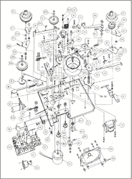
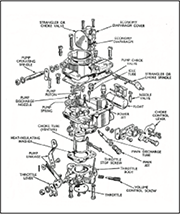
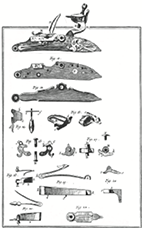
MANUAL
Before a repairman starts to disassemble a technical construction, he needs to inform himself properly on the way in which the
different parts of which the construction is put together relate
to one another; the way in which they, let’s say, literally ‹work together›. The correct coherence between those parts makes the
construction the way she is. He has to watch this ‹system of relations› constantly while he is taking the construction apart. His attention to her is not allowed to falter for a moment.
To prevent the repairman from not being able to reassemble the
construction correctly after the disassembly, and thus lower the
chance of an ‹explosion›, manufacturers accompany their products with a handbook, aptly called manual. One can roughly
distinguish two categories. The first one is aimed directly—of
course—at the hands of the repairman, at their task. It states how
the repairman has to act—not why. By means of numbers, symbols and drawings, the disassembly operation is gone over step by
step. The same holds for the second category, which also especially intends to offer the repairman insight into the building plan
underlying the construction. The repairman is addressed at the
level of language, appealing to his understanding, insight and intellect. In case of the first category, the manual movements that
have to be performed by the hands are as it were demonstrated
by the drawing: the hands only need to act (imitate) without any
notion of the how and why of the movements. In case of the second type one doesn’t immediately ‹act›, but first has to ‹think›,
‹understand› and ‹consider› before effectively proceeding to act.
Naturally, the latter type of handbooks are of a higher order than
the former; thinking books [denkboeken] imply acting books
[doenboeken]—not the other way round.
It is well-nigh obvious that the consumer only wants to deal with
‹acting books›; hardly with manuals but preferably with instructions. Instructions belong to the lowest class of handbooks. Those
books, which mostly aren’t books but rather resemble folded brochures, successfully suppress even the slightest inclination to address the user’s intellect so as to provide him with some insight
into the function of the device he has acquired. The new owner
is just congratulated with his acquisition, and is subsequently
told which buttons to push in order to switch the device on and
off respectively. Especially in our world, in which the consumer is flooded with ready-made technical products, offering any insight into their function is almost taboo. ‹Technique is keeping the consumer systematically stupid…› as the often heard lament goes.
‹In our society, also the industrial apparatus itself produces forces
alienating man from technique; instead of trying to cultivate a
rational understanding of its products, the industry by all means
tries to keep the audience stupid and encourages all kinds of irrational motivations and unconscious phantasms, thus reducing
it to a languid spending machine.›4
This ‹stupidity›—this lack of insight—is particularly expressed
in the inability of the average citizen effectively to disassemble
technical constructions. Generally speaking, he is hardly interested in any insight into the disassembly of his recently acquired
piece of technique. For disassembly suggests a form of ‹being ill›,
which he blocks out conclusively. And if not, disassembly implies
boring and obligatory maintenance. The user won’t even consider this and desires his device or appliance to function without
maintenance, repair, and without having to open and disassemble it all the time. Not just for the moment, but forever. Thus the
user plays the producer’s game. The latter will be careful not to
bother the ‹lazy› consumer with maintenance instructions. (The
producer has taken care of the maintenance already long before the product is sold: ‹Our product is maintenance free› they
say.) Thus, producer and consumer find each other in the cultivation of intensional technical stupidity and retardation. And both,
each of them in his own way, even take pride in it.
The strange exception, nearly spoiling this whole game, concerns
the use of certain kitchen appliances, which, whether one wants
it or not, can be largely disassembled because they constantly
need to be cleaned. After finishing dinner, nearly all table companions consider cleaning the kitchen appliances a tiresome
chore which they want to delay as long as possible or leave to
others. But on the other hand, they are all very much aware of
the fact they are dealing with a closed constellation of separate
parts that can be matched and disassembled, and which have
to be cleaned all the time, if one wants to prevent the order of
the constellation from becoming hopelessly messed up. Hence
most kitchens, once the evening dishes are done, are in pristine condition; as if they have never been used and are waiting for the first stain or spot. (The acme of ‹kitchens› are of course hospital ORs, in which all of the above holds in the superlative.) ¶
4. rudy Kousbroek. ‹erlkönig op de motorfiets›
(erlking on the motorcycle), vrij nederland (march 8, 1975).
IMPLOSION
The inverse, but no less destructive appearance of explosion
is called implosion. Whereas the concept ‹explosion› usually
stands for a form of immediate and uncontrollable expansion,
exploding essentially means a centrifugal breaking up (literally:
fleeing away) in parts of a former ‹whole›. The concept ‹implosion› concerns the opposite. The effect of an implosion is the
exact reversal of the explosive movement. It is incited by an inwardly directed—centripetal—force. This force strives for an
immediate pulverisation, shattering, fragmentation or crushing
of a comparable type of former whole. The movement lasts until
the force has faded away or simply cannot continue because
there is nothing left to collapse or to be crushed. Afterward, that
which has experienced the effect of the implosion is considerably smaller, flatter and in all cases more distorted than before.
Generally, something collapses because of extreme age, or otherwise because of the poor state or condition it is in. Usually, such a
collapse happens suddenly (avalanche) and surprises the owner.
However, if pure destruction is involved, the fact that ‹something›
implodes is an immediate and unavoidable result of a literal hit
externally applied to this ‹something› by a certain destroyer.
(Its owner might have seen it coming, but couldn’t prevent it.)
However, that’s only half of the story. The true implosion doesn’t
strike from the outside, but works from the inside. Such a working from the inside is all the more mysterious the more it occurs
invisibly. Actually, it is about an agent, deeply hidden in the interior of that ‹something›, which, at the moment that something
fails or otherwise resists the laws of its existence, immediately
becomes manifest. At the moment of truth, this agent ‹sucks› this
something inside and doesn’t rest before it has been reduced to
an absolute nothing. (Black Hole, Hell.)
The by far most forcefully sucking agent resides in the centre of our
earth. (Gravity.) From one moment to the other, objects that are
used to move freely and spatially across the surface of the earth
can be reduced by the earthly force to immovable, flattened forms.
(We say they have fallen.) If the construction of those objects has
been sufficiently steeled—they have been literally ‹calculated›
to the working of the agent in question—there is a considerable chance that the imploding hit doesn’t reach much further
than their transformation to ruins, half upright, half lying down:
though mere shadows of their former, proudly erected figures, these ruins are nevertheless clearly existent in a plastic and spatial sense.
It remarkable that certain institutions of the visual arts are more interested in aforementioned ruins because of the particular way in
which they look visually and architecturally, than in the process of
their collapse. This conception got the architects of the buildings
of the former Third Reich to take care, in advance, that the eventual ruins of those buildings would instil as much awe in later generations as their brand new state did in the population at the time.5
Moreover, ruins are pre-eminently suited to be lovingly included
as art works in museums for modern art. That’s where a future,
long, impassive and surrounded with care, awaits them; that’s for
sure. This striking preference of the visual world for static, final
‹results› of implosive processes that have fully come to rest, and
not for dynamic, explosive, unchaining events stressing the action
of flying away in different parts, is related to the fact that exactly
in the case of explosions, these results are nowhere to be found;
they have dissolved into space or disappeared into thin air.
Just like the connection ‹explosion› and ‹action› is essentially different from the connection ‹implosion› and ‹result›, active, temporal
music differs from static, visual art. Music propagates itself ‹explosively› within time, whereas visual art concentrates itself topographically on one location. If this parallel is correct, it becomes
clear why it is particularly the theatrical art of music that shows a
clear fascination for the dynamic character of the destructive act,
whereas the static visual arts rather prefer to acknowledge the
static aspect of an implosion. The difference between explosion
and implosion that I propose seems like a rough dichotomy, and
there are surely things that may be said against it, but it does give
an acceptable explanation for the fact that certain musical and
theatrical disciplines regularly try to incorporate forms of visual
art into their own realms. And also the other way round, namely
that in the case of certain musical performances there is such an
emphasis on visual aspects,—aside from the fact that one has to
take great pains to provide the originally static, ‹heavy› images
with the speed of ‹lighter›, because musical, movements.
Without immediately creating expectations that are too optimistic about all kinds of thinkable fusions, integrations and mixes of
both forms of art (Mixed Media: collaborations that just won’t work, or remain stuck in well-intended attempts), a mutual influence of the two disciplines can definitely yield very fruitful results
for both. At least, the mutual borrowing of each other’s intrinsic
qualities will lead to a sensible interaction between visual and
musical presentations. ¶
5. raaijmakers refers to the concept of ‹ruin value› (ruinenwert) developed by german architect albert speer (1905–1981).
EXPANSION
Of both basic forms of destruction—explosion and implosion—it
is mainly the first one that has been most copied in the world of
art, owing to its strongly expansive character. A more sociologically inclined form is known by the name of ‹cultural expansion›:
an extension of several traditional art forms and art techniques as
a consequence of what can be qualified as ‹cultural overpressure
within the institutions of art›. One of the most striking expansions
in the sixties as concerns music relates to the human voice, which
was expanded on all fronts; that was called ‹Extended Voice›.6
Something similar led to the concept ‹Extended Organ›. Within
the world of music at the time, both extensions were the rule rather than the exception. The need for an extensive, transgressive use
of traditional musical instruments did not only concern the construction, but especially also its way of playing, position and application. The different ways in which the musical instruments in
that time were subjected to all kinds of preparation and modification (the way in which, as we would say now, they can be ‹opened›),
offer many examples of the way in which the effect of aforementioned cultural pressure can work out in practice. A completely
different, but nonetheless meaningful, example of the need to subject the art world to a nearly explosive expansive vision is the inventory of all forms of ‹Expanded Performing Arts› made by George
Maciunas—ideologist and pre-eminent initiator of the then international Fluxus movement—in 1966. Especially important is
the way in which he has classified this inventory in an extensive
Expanded Arts Diagram (fig. 5). The showy, originally elongated
print looked more like a pamphlet than like an art historical publication. (Anyway, the emphasis of this ‹diagram› was more on the
presentation of the publication of its prints, than on a need meticulously to explain the intrinsic meaning of the concept ‹cultural expansion› to an interested audience.)
Also in the cinema from that period the idea of unbridled extension
gained broad acceptance. This is shown by a book about the cinema of tomorrow published in 1970 by the American film critic
and essayist Gene Youngblood, with the telling title Expanded
Cinema. In this book, he stresses that according to him, the concept ‹Expanded Cinema› should not merely refer to a technological extension, but also to a mental one. He states this in
order to do full justice to a completely new, because electronic,
visualisation of an artificial reality mostly taking place outside
of our mind. In first instance, Youngblood is concerned with the
instrumentalisation of a mentality, and not so much with the expansive mobilisation of a technology present-at-hand as such.
‹Expanded cinema does not mean computer films, video phosphors,
atomic light, or spherical projections. Expanded cinema isn’t a
movie at all: like life it’s a process of becoming, man’s ongoing
historical drive to manifest his consciousness outside of his mind,
in front of his eyes.›7
To give some idea of how the traditional consumption of images
might fan out into a diversity of spiritual, because electronic, ‹eye
media›, Youngblood proposes several new cinematographic categories. Their nomenclature—synaesthetic cinema, cosmic cinema, cybernetic cinema, holographic cinema, computer animated
cinema and virtual cinema—is significant in itself. It expresses an
intense desire to connect advanced technological formal principles to artistic conceptions which long have been lying dormant.
As if completely self-evident, he assumes a well-measured dominance of the latter over the former. However, in reality the situation is less positive; to this very day, technical and artistic thinking
are condemned to a love-hate relationship. Thus the irrevocable
result of this forced fusion between both ways of thinking will
rather show disparate than concordant features.
The question when artistic-conceptual thought will have fully incorporated and appropriated the necessary technological achievements can therefore only be answered by: never. Qua intention,
our current techno-culture is still completely rooted in nineteenth-century thought; a fact that radically obstructs the spiritual integration as imagined above. We will have to wait for a truly
non-mechanistic technology of the 21st, or, if necessary, 22nd century, which anyway will not be named as such and will be commensurately non-communicative. Steadily, especially the two basic
factors of classical mechanics, ‹way› and ‹time› (for several decades, the simple prefix ‹tele› has facilitated not only the imagination of all kinds of telematic ways of communication, but also their
‹articulation›) will lose their influence. We will be dealing with a frameless and non-device-like [non-apparatieve] representation of images, with no instrumentation of the then prevailing
media based on a cybernetic, holographic, cosmic, synaesthetic,
or any expansionist polytropic or polychrome teletechnological
variant whatever.
It is impossible to unify expansion and spirituality. The intensional directions of both cultural phenomena are incompatible. Following
Youngblood we can at least foster some expectations that in the
future a new cinema culture will emerge, transcending the current
one in terms of immateriality and ‹linguistic nature›. As yet, this development will be constrained to the flat video screen, and certainly
not to the even flatter cinema screen. The reason for this is obvious.
In the case of individual users standing face to face with a screen, it
is easier for the social viewing position to tempt one toward a particular interactivity with an artificial world of images, than would be
the case with the collective viewing of cinema-sized large screen
projections. (Just compare the fixed one-way ‹viewing traffic› in a
cinema with the constant turning of heads following the duel during soccer or tennis matches. One immediately realises the long
way a potentially Interactive Cinema has to go.)
To conclude: the fact that the term ‹expansion› originally has a mechanistic provenance and is indissolubly related to static-constructive
thinking is something that cannot be ignored. By nonetheless giving precisely this concept an explicitly artistic charge in order to
describe certain tendencies in the world of modern art does not contradict this. On the contrary. By doing so, we are aiming for a spiritual mentality that may become possible in the far future. Moreover,
we are convinced that such a spiritual dominance over pure technology is what a thinker like Youngblood had in mind with his introduction of the concept ‹expanded› in relation to the idea ‹cinema›. This
optimistic attitude is his every right, even though at first our predominantly mechanistic thought would suggest otherwise. That’s why we
wanted to release both workings—the working of our mechanics
and its straightforward thinking, and the one of Expanded Cinema
and its unprecedented expansive supply of images—onto each
other so as to test the latter’s consistency. The result goes without
saying: the conceptualisation of an Expanded Cinema and related
expansions appears in any case to be based on a much too rosy, that
is, a much too utopian impression. The ‹message› manifests itself
as ‹target›, and not, let’s say, as an operation manual to arrive at the
new artistic expansions intended. ¶
6. extended voice comprises all vocal techniques not employed in the classical repertoire, such as sprechgesang, screaming, or overtone singing. the vocal work composed by the italian composer Luciano berio is a good example of the usage of extended voice techniques.
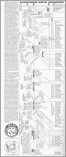
7. gene youngblood. expanded cinema. new york: e.p. dutton (1970), p. 41.
HIT AND FALL
In daily life, the destructive hit, intending the fall of what has been
ordered, has a different meaning than in the world of art. That’s
clear. For life and art are two different things. But there is one exception: like no other, cinema is able to demolish the dividing line
between life and art—between the ordinary and the symbolic.
Whenever a hit is administered (western, krimi, drama, slapstick)
this leads to either a form of Verklärung (transfiguration) of the
hero, or Tod (death) of the villain. Or both of course. Especially in
the case of the slapstick movie, these things are addressed in an
extremely efficient and well-measured way. In this type of movie,
the concrete, hard hit quickly becomes a soft metaphor. For example, as happens when someone tells a joke and the punch line
releases some sort of falling-energy [valenergie]—please note
that it has been us who put this energy in there by first listening to
the story with the necessary attention. In the same way, we invest
a lot of goodwill into the slapstick movie, hoping that its revenues
will be paid out in the form a priceless burst of laughter. (A burst
of laughter, like an already forgotten bonus ‹simply› falling into
our lap.)
In order optimally to do justice to this underlying mechanism, the
plot of the slapstick movie preferably takes place against the background of some small bourgeois ‹affairs›. Even before the story
has started, the director places those small affairs in the greatest
possible order. The message is clear: ‹Woe befall the one wanting
to disturb the order!› We immediately identify the small affairs in
question with our own, laboriously acquired possessions; nobody
may touch those either. That we nevertheless uncontrollably burst
out in laughter when at a certain moment one of these neat affairs
is suddenly overthrown, can be found in the way in which, and the
moment when it happens. Usually by means of a single, somewhat clumsy jabbing movement, accidentally made by one of the
protagonists of the film plot. Thus he unleashes an unstoppable
pile-up [valpartij], until nothing is left of the affair concerned.
The movie directors Stan Laurel and Oliver Hardy undoubtedly
belonged to the absolute masters from the twenties and thirties,
and they had a perfect command of the mechanics of jab and fall.
There are two reasons that justify dwelling on this duo’s mastery.
The first one is the remarkable fact that in their movies, especially
near the end, like some kind of catharsis, flawless cars and pianos completely go to rack and ruin. They are either demolished in front of our eyes in a torturously slow but always extremely careful
way, or otherwise they literally implode in no time, from one moment to the other. (Please note: they implode—never explode!)
The imploding collapse of precisely cars and pianos is not founded
on some kind of vague preference, but has been literally, as the
term already implies, calculated. Laurel and Hardy have explicit
reasons to do so. Within our society, both technological products
have been pre-eminently the most important representatives of
‹affairs› that we have nicely earned and impeccably organised
during our lives. Their implosion is a metaphor for a punishment
that we deserved owing to our wanting undeservedly to be up and
about with these precious technical products. The collapse of
precious vehicles and musical instruments causes this whole possession to be reduced to nil in one fell swoop, and only because
of a single unfortunate trip-up! It’s not surprising that we react to
such events in a most hectic manner, and experience them as extremely threatening to our stable household. That’s why we are
usually insured against these types of cultural implosions.
Although the slapstick movie offers us a simplified account of the
mechanics ruling and governing this constellation of jab and fall,
it is in no way less correct. That we have to laugh about it over
there, in the cinema, but have to cry when it happens in our own
environment, is nothing but a matter of distance. Distance, not
only in a topographical but especially also in a chronological
sense. That’s what the mechanics of destruction clarifies for us.
The second remarkable matter concerns the fact that after committing several faux pas, both protagonists are always caught up
in a flight: sometimes in a waiting car, sometimes in music. And
the latter preferably represented by a player piano running amok.
But it’s not just fleeing. Catching and fleeing go together. (Fleeing
without catching is like soccer without the goal.) Moreover, catching is qua movement the antipode of fleeing. Both movements fit
together like yin and yang. If we define the concept ‹fleeing› as
a centrifugally flying away, because the fleeing movement essentially has an explosive origin, there is nothing prohibiting us
from considering the concept ‹catching› to be some kind of well
planned implosiveness, because of its centripetal character.
All of this just seems to be a play with words, and partially that’s
maybe even true. But what is especially interesting, is the
mechanistic functionality that becomes visible because of this
nomenclature. So, it is exactly this functionality that is playing
a role in nearly all of Laurel and Hardy’s movies in one way or the other, albeit sometimes obscurely so. In the construction of
their plots they know like no other how to address interesting
showdowns between one the on one side, explosive (read: ‹ fl eeing ›), and on the other side, implosive (read: ‹ catching ›) agents.
As said, there’s an excessive amount of fl eeing in the movies of the
duo. But there’s also the necessary attention devoted to its antipode; there’s just as much eager catching! At least, that’s what is
being tried! The real art is to keep a correct equilibrium qua timing between the fi nal catching and the fl eeing unleashed just before. It is a matter of a well balanced staging, in which the fl ight
is preferably presented in the metaphorical appearance of a fall.
And it is the latter that Laurel and Hardy were able to ‹ orchestrate › masterfully. Every time that they have to make a run for
it in their movies, and try to climb into the car that’s waiting for
them in order effectively to fl ee with it, precisely this extremely
reliable ‹ affair › completely collapses, because of, say, an at fi rst
sight incomprehensible, centripetally directed force. On the spot,
the automobile — this outstanding example of a unique, cultural
achievement — becomes a fl at ruin, stretched across the face
of the earth, and thus an eternal witness to the slip and Fall of
man (fig. 6). The manner in which the car is lying around, ‹ folded
up ›, shows us that such vehicles are ultimately not to be trusted,
and essentially have to be considered as a sort of technique that
is settling a score. In order to satisfy our sense of justice, wanting to see slips and
crimes suffi ciently punished, these sorts of showdowns between
the fugal fl eeing [fugerend vluchten] and petal catching [peterend vangen] are generally decided in favour of the latter ‹ agent ›.
But in Laurel and Hardy’s case, things usually go slightly different. Even before it is a matter of justifi ed catching, Laurel and
Hardy fl ee and disappear from the picture, keeping us — the
viewers — guessing whether this catching will ever succeed. And
that’s how it should be. The duo has to be able to start their next
adventure with a clean slate, without being bothered by the collection of overdue accounts or doing lengthy penances. On the
contrary: that’s the reason that ‹ the game of jab and fall ›, as it is
inimitably practiced by Laurel and Hardy, is so special. Because
although in all of their movies there’s a lot of jabbing and falling,
it is without an exception that an all-settling Fall fails to appear. ¶
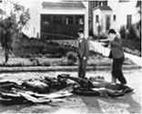
FESTUM FLUXORUM
Fluxus art-amusement must be simple, amusing, unpretentious, concerned with insignificancies, require no skill or countless rehearsals,
have no commodity or institutional value. […] Fluxus art-amusement is
the rear-guard. […] lt strives for the monostructural and non-theatrical
qualities of simple natural events, a game or a gag. It is the fusion of Spike
Jones, Vaudeville, gag, children’s games and Duchamp.
• George Maciunas, Manifesto on Art /Fluxus Art-Amusement, 1963 8
The piano is a taboo: it has to be destroyed!
• Nam June Paik, 19639
Today, 1992, 30 years later, we meet again in Wiesbaden, to do actionist,
innovative, anachronistic, humorous, spontaneous, imaginative, noisy,
simply Fluxusist things, thus keeping Fluxus alive.
• Fluxus da Capo: Wiesbaden 1962–1992, 199210
The Fluxus performance, as they have been organised from
1962 in Weisbaden, Düsseldorf, Wuppertal, but also in London,
Amsterdam, Scheveningen, Copenhagen, Paris, and New York,
were characterised by action, act and ritual. Initially, they aimed
to playfully provoke the existing orders, and certainly not to overthrow them. The desire for provocation was never articulated,
for that would obstruct the ‹game›. In essence, Fluxus doesn’t
want anything: no provocation, no destruction, no politicisation, no education; at most, it wants to amuse itself with how its
provocative influence disrupts the ‹orders›. So, would there be
more beautiful representatives imaginable of the orders referred
to, than our bourgeois pianos and grand pianos that we so magnificently maintain in order, because literally in tune? It’s not surprising that at the time precisely these extremely stabile status
symbols were chosen by Fluxus artists to be fundamentally ‹zerstört› (destroyed).
At first sight, the maltreated Fluxus pianos correspond qua view
with Stan Laurel and Oliver Hardy’s ones (fig. 7). Attention: qua
view, but certainly not qua intention! In case of Fluxus pianos, any slip, accident or repayment—qualifications lending Laurel and
Hardy’s drama such an unforgettable direction and ‹sense›—is
out of the question. It is much more a matter of attitude, disposition and character. Moreover, the centripetal collapse of a piano
literally happened to Laurel and Hardy—happened behind their
backs. Contrarily, the care exercised by the destruction of Fluxus
pianos was somewhere between a plastic surgeon’s care and a
ghost-driver’s one. Nevertheless it was in all these circumstances was meant as ‹care›, and care just needs to be exercised consciously. Yet there was something else to the Fluxus piano that
made it pre-eminently suitable for orchestrating performances.
The following is meant to offer some clarity.
George Maciunas, the ideologist of the Fluxus movement, always
stressed that the true Fluxus artist had to avail himself of normal, everyday and obvious objects during his performances.
Complicated, overly ambitious technical constructions were out
of the question. An explanation of this preference can perhaps
be found in the fact that especially primary, elementary and everyday affairs lent themselves much better to the cerebral side of
Fluxus than constructions that were more closed, autonomous.
The piano is a distinct example of such an ambitious, complicated,
‹closed› technical construction. But she differs from other closed
systems because she wants to interact. She wants to be played
in exchange for sound. For this and no other reason, she seductively sticks out her shining keys; they only need to be seized! It’s
therefore not surprising that most Fluxus artists couldn’t resist the temptation to accept her offer; albeit, when it comes down
to it, not in the regular way—through the keyboard at the
front—but subversively through the interior of the musical instrument that has been, if necessary, opened by force. A preparatory game of advances was almost invariably followed by an
actual séance of a surprise attack and conquest, that was as invariably concluded by leaving a complete ruin behind. (That such
operations were preferably executed by a collective of artists and
not by a single soloist, is a significant fact that reveals a lot about
the aspect of dominance present in this type of destruction.)
During this ‹Umwertung› (transvaluation), the piano in question accompanied her own demise by emitting miserable cracking, hitting, gliding and creaking sounds, as if she was trying to indict
her abusers for their crimes. The Fluxus artists had a different
view; they experienced these lamentations as a welcome form of
acoustic report of what was happening to the piano concerned.
According to them, this report truly actualised the interaction
between the piano and her treaters. Moreover, they considered
the forced sounds to be pure ‹music› and their actions pure
‹concert›, regardless of the fact that by doing so, they allowed a
musical element in their séances which, when considered ideologically, after the fact, may at least be considered to be of a
questionable character.
The different manners of destruction—even those happening during the Fluxus performances from the sixties—can be essentially
reduced to one single, simple basic pattern. To substantiate this
claim, we will reason as follows. If one desires action, and wants
to celebrate that action in front of an onlooking audience, one
can apply three different methods: construction, repetition, disassembly. Would one choose the first approach, one irrevocably
has to deal with the fact that the public construction of something complicated (including the interpretation of a complex
piece of music, as is happening during traditional concerts) by
definition takes a lot of time. And by definition, the type of audience attending Fluxus performances doesn’t have that sort of
time. That’s why Fluxus artists clearly prefer the second method,
in which a simple act usually relating to something completely
insignificant is endlessly repeated. By constantly looking at this
continuous repetition, even the simplest thing will finally lose its
meaning. One could say that already just the fact that something
is repeated takes the place of the anonymous, meaningless thing
that the repetition is exercised upon. But repetition also has its downside. A repetition procedure that
is too emphatic can easily turn into a sort of ritual, and unwanted symbolic, and even mystical, elements may creep in. That’s
why most Fluxus artists prefer the third, more or less alternative
variant: the destruction of an initially given order by means of aggressive, quite immediate disassembly. Moreover, this form lends
itself to beautiful theatre, and ‹theatre› is what the Fluxus movement strove for with all its means, even though Maciunas emphatically advocated the ‹non-theatrical qualities of simple natural
events›. But on closer inspection, even this restriction set for ideological purposes actually possesses a clear theatrical impact.
The laws of destructive mechanics, that may occupy a meaningful
role in the orchestration of more or less violent Fluxus séances,
weren’t strictly observed, but laid dormant under the epidermis
of the Fluxus ideology that was current at the time. No matter
how intuitive, in the end their objectives were poetic in nature,
even though at some points they are pretty close to the ‹laws
of the destructive character› as they have been formulated by
Walter Benjamin in his aforementioned essay The Destructive
Character. Especially when he speaks of:
‹The destructive character knows only one watchword: make room.
And only one activity: clearing away. His need for fresh air and
open space is stronger than any hatred. […] The destructive
character does his work; the only work he avoids is creative. Just
as the creator seeks solitude, the destroyer must be constantly
surrounded by people, witnesses to his efficacy.› In this fragment, his ideas clearly touch on the ones formulated by the Fluxus
ideologists. But elsewhere they diverge quite substantially.
Anyhow, Fluxus did not care about these types of poetical expressions. Within Fluxus, the Benjamin’s ‹soft› manifesto was transformed into ‹hard› reality, because actually practiced. And
practice is governed by different laws than the ones written on
paper. Yet one could state that Fluxus has never lost sight of the
ludic and amusing aspect of destruction, if we are willing to believe the statement from Fluxus-Wiesbaden 1992 as cited above,
that is, thirty years after. And aside from the fact that the practical effect of this conviction turned out to be utterly different from
what was initially expected.
In spite of all laws, two conclusions may be drawn. The first one
is that, though most Fluxus artists used to involve all kinds of
anonymous and symbolically poor objects in their performances, it was exactly the grand piano that counted as such an extraordinary, nearly metaphorically charged artefact, that it
apparently meant everything to the artists to engage with this
unexpected ‹offer›, notwithstanding their ideology. This preference is a nice intrinsic aberration, which is more clarifying than
obscuring; more touching than appalling. The second conclusion is that Maciunas’ recommendation to make sure that the remaining objects, as they were usually left behind lying scattered
all over the place after the Fluxus performances had been finished, would not fall into the hands of art collectors like trophies
or be carried off to museums, has been to no avail. Nowadays,
even the most primary Fluxus remains, let alone the very impressive and imposing piano ruins (fig. 8), represent a huge institutional, art sociological, but also artistic, and therefore
correspondingly financial, value. It’s all in the game, though this
shift in mentality is also natural. For we are dealing with stigmatised objects; things that have been ‹there›. They are historical
testimonies to a unique, singular, rebellious, obstructive, antiartistic movement without precedent. And all its remains fully
deserve to be preserved. For it just belongs to the task of museums carefully to conserve these remains and to show them to
the audience in a suitable context. (In this sense, there is nothing differentiating these institutes from, for example, anthropological museums, collecting artefacts of lost civilisations so as
to exhibit them, whenever desirable, in shapes and contexts that
provide insight.) ¶
8. tony godfrey. conceptual art. London/new york: phaidon (1998), p. 103.
9. nam June paik. video time-video space (exh. cat.). basel: Kunsthalle basel/Zurich: Kunsthaus Zurich, (1991), p. 46.
10. rené block et al. fluxus da capo: Wiesbaden 1962–1992 (exh. cat.). Wiesbaden: Kulturamt der Landeshauptstadt Wiesbaden (1992).
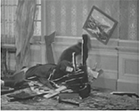
THE ‹PREPARED PIANO›
A woodscrew, three centimetres in diameter, is cautiously being
wedged between two strings of a grand piano. Everything happens with extreme accuracy and deliberation. The two strings
are slightly being pulled apart in order to insert the metal screw
into the piano without making a mistake—as if it were a fragile
glass thermometer inserted between two soft lips. But that’s not
all. That single screw turns out to be a front runner in a whole series of screws, bolts, and little pieces of rubber and wood, which
soon will be subjected to the same implantation treatment (fig. 9).
Qua view, this insertion of alien components into the originally
closed body of a grand piano shows a conflict between absolute
order and seeming arbitrariness. On the one side, the impassiveness of the choir of strings, hiding the interior of the piano from
view like a tight metal corset. On the other side, we are dealing
with a collection of little tips and heads, awkwardly bulging out
and towering above the metal straitjacket, without any immediately apparent logic of their placement—of ‹what is where›. No
wonder. This situation is a collision between an order based on a
lengthy, crystallised past, which one cannot tamper with unpunished, and something that seems to be thought up on the spot,
and condemned to occur only once.
Tradition versus singularity, that’s what it is all about. A handful of
inconspicuous and insignificant screws—similar to millions of
others—is faced with this one grand piano in all her lonely majesty. A musical instrument, of which the physical appearance is
the paragon of a technical construction that, let’s say, has overcome all unnecessary screws: not a screw too many. The contemporary grand piano has been ‹fully developed›; she is ‹finished›
and needs no more screws. During the years of its lengthy development, all unwanted extras and contradictions have been sidetracked and cancelled out against each other, and that’s exactly
what the piano is showing.
The unsolicited insertion of a number of common screws in such a
high-quality, highly complex, and in every respect ‹finished cultural product›, especially in such an undeserved spot, is usually
considered to be a destructive, and therefore reprehensible act.
Even if it would be only a matter of the implantation of a single
screw, and not of whole swarms of them, such an intervention
is diametrically opposed to everything the piano builder has invested in this piano many years ago based on his workmanship of many years. The ad hoc execution of private ideas and individual
inventions therefore seems to mock the careful practice of oldfashioned methods of which, we should say, the piano builder is
the ‹designated figure›. When he inserts a screw, this is to the
benefit of the order. When someone else would do so, the order
is by definition disturbed. It is therefore hardly the issue whether
the preparation of pianos can be called a profession. A question
related to that, is to what extent the implantation of screws and
such, even if this operation is executed with the utmost precision,
is threatening for the status of the profession that is recognised,
namely the profession of piano building and maintenance.
If we inspect the screw that the preparer is about to insert into the
grand piano a little bit closer, we notice an extraordinary phenomenal characteristic: he is ‹loose›. Because of his being-loose,
he figuratively unsettles all parts of the piano that have been fixed
in place. The off the cuff implantation of a screw (or a piece of
wood, rubber, felt, nylon, plastic or whatever) disturbs the acquired order that usually rules inside the piano. This order keeps
as it were all the parts of piano together. It is definitely not the
case that the piano rejects this one loose screw and doesn’t want
to offer him a ‹home› for discriminatory reasons. No, it is rather
the complete opposite. That one screw—that one thing—provokes on his own the whole piano! Hence piano tuners have a
nearly physical experience of this provocation, and they are personally concerned with the insertion of that one screw to such an
extent, that they consider the preparer to be capable—and they
actually condemn him already beforehand—of deliberately destroying the whole piano!
When viewed from ‹our› and the piano tuner’s perspective, the preparer seems to be cursed with two contradictory ‹characters›.
At first sight, there is something unmistakably destructive about
him. For he is busy with pulling apart strings and jamming screws
between them, which just isn’t right. However, if we observe him
more closely, and we see how he is busy performing his task with
an extreme precision, only then his devotion becomes apparent
and we discern his constructive disposition.
The preparer, in his regular capacity as practicing musician, usually ‹brings› his music a tempo. But now that he is preparing the
piano, he hangs on to this same music for a comparably long
time. On closer inspection, he is hardly doing anything, or even
nothing while he is preparing. (Or we should interpret the moaning of the strings at the moment that he pulls them apart to be able to wiggle something between them as an ‹execution›.) By the
way, no one knows about this execution-of-nothing. Preferably,
the pianist prepares his piano alone, a few hours before the actual concert starts. Moreover, this occupation requires, as said, its
own time, a sort of ‹clock time› that can be best compared with
the time passing away during the tuning of a piano, which no one
knows about either. (Viewed thus, preparing is a special form of
tuning; it invariably results in radically detuned pianos.)
The friction between the opposed character elements mentioned
above—constructive versus destructive—is reflected in the ‹attitude› taken on by the preparer during his labour. This attitude attracts our attention even more if we realise that preparation and
execution aren’t delegated to two different persons, which would
be obvious, but to one and the same figure; somebody who is expected temporarily to exchange his acquired mastery as a pianist
for the ad hoc attitude of someone busy with obscure little parts;
somebody capable of imperceptibly switching from master to assembler and vice versa.
This switching attitude is not only a question of mental disposition,
but especially also of physical display. As a rule, the pianist is present sitting behind the keys of his instrument, that’s his conventional performing posture. Contrarily, as a preparer he stands.
He stands in front of his piano like a cook in front of his furnace.
That’s why the view of a pianist, preparing his piano for hours on
end is quite revealing. Just look how during the preparation the
former masterly pianist takes loose screws between thumb and
index finger in an untrained and unprofessional manner, and disappears with them underneath the lid of the piano. As if he has
just thought up the whole operation on the spot and barely has
an idea of how he has to manage the job. (His posture, bent over
into the dark interior of the grand piano most resembles the posture of a car driver, desperately bent underneath the hood of his
halted car, seemingly sunk in deep thought.)
We who are looking at all of this, ask ourselves what on earth has got
into him—this masterly pianist—to take on such an unpianistic
and ‹unseemly› posture. Is it his love for the music that prompts
him do so? Or is there something going on with the music, and
is she done loving him and us? What has got into this pianist to
exchange, albeit temporarily, his position as blessed interpreter
for the position of an upgraded piano tuner? Why is he prepared
to climb down some steps on the evolutionary and hierarchical
ladder; in the direction of loose screws and the like? Why does he put up with this artistic degradation? We look for the answer
at the composer. He is the one who both desired and staged
this descent, this inverse promotion. This formational [slagordelijk] descent—this displacement aimed at musical production—matters everything to him. The pianist rising from his chair,
bending over the interior work of the piano, his never failing concentration, slowly trying out the preparation sounds that are literally unheard-of and for time being will only stir his own ears, the
hours passing; all of this, that’s what the composer cares about.
At least, that’s what he also cares about, because his final target
is and remains bringing about ‹correctly› sounding music for interested third parties.
Once the concert is over, the grand piano is ‹unprepared›. All incisions in the piano body are closed, all surplus screws are removed,
and what was opened is closed. Thus, the cultural peace and quiet
is reestablished. The preparation turns out to be incidental, a ripple in a world of timeless music. ¶
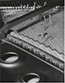
THE CLOSED PIANO OPENED
Before a piano actually can be deconstructed, she has to be
‹ready› for it. In this case, being-ready means that the piano in
question first has to be constructed most meticulously according
to the rules of the piano building tradition. Construction meticulously implies a correspondingly meticulous repetition of a whole
series of actions. There are two types of repetition: one is aimed
at exercise in order fully to master the putting together of, in our
case, a piano, the other is aimed at reproducing a whole series of
copies from that one mature and viable model. In this latter case,
the producer is not aiming for the production of one single specimen, but the mass production of a final, ideal specimen.
All of this doesn’t exclude the fact that every piano producer will
keep more or less his own building style, and will do anything to
differentiate his instruments from his competitors qua richness
and volume of sound, easiness of touch, stable tuning and so
on. But generally speaking, all pianos around the world are constructed in the same way and according to the same rules. The
mature product will always result into something that we will call
‹piano›, and not, for example, into a car, just like a completely developed car in no way resembles a piano. (Unless one pays attention to the fact that both constructions are mounted on wheels to
be able to move across the earth’s surface. But the difference in
why, when and how this movement takes place is decisive. A car
is a mobile vehicle, whereas the piano is an immobile piece of furniture. The former wants to move ahead, the latter wants to stand
motionlessly still. Only at the moment an automobile is parked
in a garage, it slightly resembles a piano in a drawing room qua
immobility. But to immediately claim that a piano is parked in a
drawing room, fully devalues the status and function of that piece
of furniture. For a piano has to radiate in all directions, and not in
just one, which is exactly what a car does and for which purpose it
has been fully equipped.)
Before a piano is going to acquire her definitive, factory-based form,
all necessary parts are transported to the assembly place in a,
let’s say, deconstructed appearance. While the factory workers
are busy assembling the piano in that place, the instrument finds
herself ‹fully open›. Only in the last phase of the assembly she is
definitively closed and her polished surface reflects the greedy
hands of her future owner. At that moment, the piano is actually
‹ready› to be sold. If, after many years, that same piano is once again ‹opened› by
members of the Fluxus movement and sometimes literally deconstructed to the bone, both trajectories of respectively building
up and breaking down briefly pass each other. If this crossroads
would be photographed from both directions, the view of the
two partially opened instruments wouldn’t differ much at first
sight. At first sight, because the intention and orientation of respectively the builders and demolishers of the instrument as they
are acting elude us—us, momentary observers. For if we would
have closely followed the activities of both types of ‹workers›, we
would know better! If, for example, we would see in a flash of a
second a surgeon cutting into a human body, we wouldn’t be
sure whether we were dealing with a doctor or with a murderer.
If, however, we would watch for longer period of time, the ‹position› of the cutter would become clear to us. This is the reason
that photographic snapshots of especially Fluxus performances,
showing, in our case, the maltreatment of pianos and grand pianos, so much resemble photographs showing workers welding
together those same instruments into unbreakable units with the
utmost care.
By means of two photographs, both showing a little group of gentlemen busy with an open grand piano, the resemblance of both
‹postures› and ‹positions› becomes clear. In figure 10, we see six
employees of the famous Steinway & Sons piano factory, busying themselves with gluing clamps to hold things together inside
the piano body. In figure 11, we see a snapshot of the performance
Piano Activities by Philip Corner, executed in Wiesbaden in 1962.
Six gentlemen arebusy with all their might to ‹wrest› once and for
all of the piano that which is always ‹stuck› in it. With a little bit
of good intentions, both functions can be reversed: on the first
photo, a piano is tortured, on the second one, the same instrument is put together to become a full instrument. It just depends
on which orientation we are looking from at them. But for both
groups of ‹executors›, there cannot be any misunderstanding:
for one group it’s daily work, and the other one only does it once,
and cannot be bothered to repeat the act. A more suitable difference between making technique and making art can hardly be
thought of. ¶
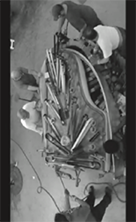
FIRE AS ARTISTIC DESTRUCTION
A museum is faced with a curious dilemma when it is offered objects that are not the result of more or less ritual, and therefore
public, performance-like séances, but which rather have been
exposed to planned, meticulously executed destructive operations within the safe seclusion of the artist’s studio. The aim of
this type of ‹secret› projects is clear: the point is to produce autonomous art works, which are supplemented with the stigma of
‹performance› in order to provide them with additional artistic
and spiritual value. (That stigma is as it were supplied together
with the art work by the artists concerned.) The objects that have
been thus maltreated are immediately—that is, without a ‹detour› through performance, event, Aktion, happening or whatever—offered to interested or friendly museums, galleries, and
collectors. In his studio, the artist sets fire to a piano and delivers
the remains, let’s say, the following day to the nearest museum.
Or he crushes a cello, immerses it in epoxy, and brings it to a gallery specialised in this type of art, which will take care of the further distribution and settling of the finances. The ritual as artistic
act, the artistic act as stigma, and the stigma as artistic commodity, that’s what this cycle comes down to.
Any museum exhibiting objects that have been destroyed or otherwise maltreated, balances between cemetery and viewing centre.
Cemetery, because the material remains concerned have found
their final resting place on ‹sacred ground›. Viewing centre, because the museum wants to give visitors the possibility to admire
these unique objects for both their visual and historical-archaeological qualities. To give an example: a museum is guarding a collection of historical musical instruments in which a lot of devotion
and restoration time has been invested. The same museum decides to collect a number of essentially similar instruments which
happen to be in a radically destroyed state owing to the actions
of artists for the sake of certain artistic reasons. In that case, such
a museum has to guard a fragile balance between both types of
exponents with the utmost care. Such a museum will just have to
take a distance from unifying these essentially incompatible outlooks, lest it loses the correct view on its position and function.
An absolute limit for museological preservation is reached when a
dismantled object is ‹far gone› to such an extent, that it cannot
leave the museum by itself. A paradoxical situation: a maltreated
object is brought into the museum in the form of a package of fragments and remains, chaotically kept together, where it metamorphoses into an art work, which cannot leave anymore (for
example, because of a loan request) because it is too far gone!
Time stands still, and in no case the object is allowed to crumble
and deteriorate any further; that’s what the museum will certainly ascertain.
The apex of art works that are ‹far gone› are objects which have been
attacked by their creators with fire or incineration. In any case, the
exposition of these types of eliminated works poses essentially an
impossible task. Everything is contradicting everything. The consuming fire extends into the exposition itself, and actually to the
position of the museum in question. For a museum doesn’t just
exhibit ‹fire›. Materially speaking, art is most vulnerable to, and
therefore very anxious toward, fire. Setting fire to an object and
declaring it art borders on cynicism. At such a moment, this cynicism touches the museum. The museum is provoked, bursts open,
and the scene moves outside. The museum cannot offer a home
to the burned thing that de facto doesn’t exist (anymore). That’s
why fire surpasses all thinkable methods of destruction, and is, in
a certain sense, its perfect metaphor. But that’s not all: fire transgresses the border between art and reality and reduces art to dust
[stof ]. But this cannot be the purpose of something as immaterial
[onstoffelijk] as art; to end up as dust.
The limits mentioned above—one in which the art work is too far
gone to continue being exhibited, and the other in which fire has
metamorphosed the art work into a final ‹nothing›—should normally be closely guarded. But time goes on, and we are currently
losing the correct sense of the problems surrounding the theme
‹art and anti-art›. Viewed thus, even the solution of the problem
concerning the conservation of the unconservable will most
probably not be necessary in the long run. The key to these sorts
of solutions is as it were locked inside the truly anti-artistic object. That’s why the anti-artistic object isn’t as timeless as big, established art, but rather dated, timely and temporary. Especially
‹timely› in the sense of unstably material, non-constructive and,
above anything else, dissolved. There’s no actual future for the anti-artistic object. That’s why it wants to go away—away from the
established world, and away from the places where it is carefully
stored and kept like a settled art work.
All of this is studio work, no trace of any performance. The stigma
of fire and incineration is indispensable for the metamorphosis
of this piano into an art work (fig. 12) or design object (fig. 13).
Even though this stigma is actually unjustified, because artificial, the
object can enter the museum just like that—thus without detours.
During a public performance in 1960, entitled Homage to New
York (fig. 14), an originally immaculate white piano ignited itself.
Tinguely had prepared the piano to do so beforehand. The following day, the installation to which this piano belonged were carried
off to a garbage dump. At any rate, this piano was lost for the museum, and Tinguely acted—intentional or unintentional—in the
spirit of Maciunas. (By the way, he did so a few years before that
same spirit was explicitly articulated by Maciunas.) Near the end of 1988, through no fault of any artistic concept,
three concert grand pianos fell victim to a fire in Utrecht. Usually,
the remains of these three piano would have been carried off to a
garbage dump, which would have sealed their fate—to irrevocably disappear from the face of the earth. This carrying off wouldn’t
differ essentially from the way in which in 1960, Tinguely’s burned
New York piano was cleared away after its incineration. (At first
sight, because a local New York regulation stated that all debris
left in public space after the work had been done had to be carried off in containers.) In the case of the concept as developed for
Utrecht, things were fundamentally different. The three charred
pianos weren’t carried off, but at the last moment ‹brought back›
from their inevitable, humiliating final destination: the garbage
dump as a final grave. Forcibly, this last course was changed into
the direction of ‹art›. Thus, by literally placing back of the pianos in an artistic environment (not a concert hall, but a museum),
their burned remains were very artistically ‹de-functioned› into
art work.
The meaning of the concept of Tombeau de Glenn Gould (fig. 15), as
often happens in cases of this type of anti-artistic, and therefore
mainly temporary, artistic operations, was determined primarily
by the sequence of actual actions necessary to arrive at the realisation of art. A possible sequence is the following: conceptual
idea › piano › incineration › remains of piano › art work › museum.
Arman’s Piano Flamboyant from 1966 (fig. 12) is a good example
of this sequence. Another possible sequence is: conceptual idea
› piano › incineration › fire as action › action as art work › photographic recording of the incineration › garbage dump. A good example of this sequence is Jean Tinguely’s Homage to New York
from 1960 (fig. 14).
In case of Tombeau de Glenn Gould from 1989, the sequence was:
piano › fire › dump › conceptual idea › bringing pianos back from
dump › museum › piano as art work. (And after the exhibition of
the piano as art work: removing the piano from the museum and
organizing its definitive transport to the dump.) The difference
between the latter sequence and first two ones is subtle but fundamental, and is mainly found in the retrieving manoeuvre of the
Tombeau. In the first example, the piano moved itself immediately
from studio to museum. In the latter case, the piano first moved
toward the dump, so as subsequently to return to its origin: not
the concert hall, but rather a museum, yet only to end up on a
dump. Whereas in the first two examples the artist’s incineration action is predominant, in the latter case it is only the displacement of the attention from incineration as ritual to the action of
turning around what cannot be turned around, in this case the
replacement of the irreplaceable in an artistic context.
If we qualify these sequential choices as a type of ‹cultural hesitation›,
the following view appears. An artist finds himself at a crossroads.
If he chooses one road, he is apparently aiming destructively at
‹opening› the piano as ‹closed› cultural heritage, in order subsequently to leave the remains behind, maltreated and fully exposed.
If he wants to take the other road, he desires to ‹close› that same
piano—which is now ‹opened› and in a destroyed state—once
again to lend it the status of closed art work. ¶
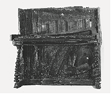
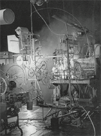
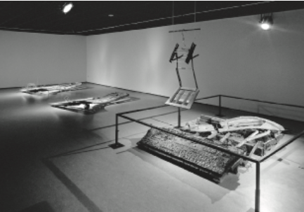
SELF-DESTRUCTION
Our ordered and organised society allows neither for wilfully
executed destruction nor for self-destruction. Community and
destruction are essentially incompatible concepts; they are diametrically opposed to each other. However, this juxtaposition
does not exist in the world of art, where destruction follows from
a constructive attitude, which is just typical of art. (By the way, in
art it isn’t called destruction; it rather possesses the status of a
work of art.) Art doesn’t know of destruction as such. Everything
in art is constructive—even in case of anti-art. That’s why only
third parties feel called upon to destroy art; third parties that
literally feel placed outside of art, attacking works of art with
Stanley knives and cutting them to shreds (fig. 16). The destruction of art works is the exclusive right of the artist.
He, and no one else, is pre-eminently the designated person to
annul all the energy invested in his art work, whether with Stanley
knives or not (fig. 17). It is he who is allowed to dis-order what has
been masterfully ordered, for also this dis-ordering is an inextricable aspect of the creation of art. By contrast, the destroyer is
by definition someone else; somebody who, for whichever reason, wants to attack the order from the outside. Viewed thus, the
coincidence, in the case of art, of the orderer and destroyer in a
single person is not without meaning. And even more so because
true art is founded more on the art of removal and omission, than
on the art of addition. Thus, there’s something special about the
relation between destruction and construction in art.
When an artist decides to construct an art work that is self-destructive, this curious relation becomes clearly apparent. In other words,
a form of a single and irreversible auto-destruction in which
the necessary destructive energy is not visibly provided by third
parties but by the art work itself. To ascertain whether the auto destruction process will work out successfully, the artist has to
develop effective execution software beforehand, even if that is
merely on the level of a simple ‹plan›. Depending on the audience that the auto-destructive show is intended for, the artist
stores the hardware sustaining this software in the art work, be
it visibly or not. The result is of course that these ‹wares› will be
destroyed at the same time as the art work. The artist has to be
prepared to accept that loss. When the moment has arrived, the
art work—robbed of its program and aimlessly at the mercy of
an unstoppable and tropical decay—has to eliminate itself just
as unstoppably until there is nothing left to eliminate, reduce
or dissolve.
In the field of self-elimination, art can learn a lot from the aforementioned pyrotechnics. The perfect and consistent auto-destruction
of art works according to a preconceived plan is a much more difficult business than it seems at first sight. It is, as said, of vital importance that one has to approach art works that are suitable for
self-destruction from the inside and not from the outside, if one
anyhow wants to take serious both terms—‹auto› and ‹self›. The
pyrotechnist understands this like no one else.
In the case of art, self-destruction is a type of game. This game is in
itself a form of ritual. In its turn, ritual is always based on action.
So, what can be more important during an auto-destructive séance than precisely its execution! For everything revolves around
the action as activity in order to render this action, and the remaining artefact, the status of ‹art work›. It is about the promotion of the destroying action to work of art, in which the actual
hard object that is the target of the action functions as fuel for the
benefit of driving the soft ritual action. This fuel—the object—is
used until the last drop. The static, visual arts are not familiar
with the concepts ‹action›, ‹game› and ‹ritual› as such. The presence of an impassive work of art, which, in spite of its impassive
rest, is active nonetheless and nota bene destroying itself in action, seems to be an impossibility and self-contradictory. For the
sake of showing the friction of making possible this impossible
feat, committing some ‹theatre› is indispensable. One will have
to visualise clearly how the originally ordered art work, not only
destroys itself but especially also its order. As said, the art work
seemingly draws the energy it needs for all of this from itself, until
it is completely ‹empty›. This ‹depletion› too needs to be visualised and staged in an abundantly clear manner (fig. 18). In relation to the above, it is interesting to compare the metaphor of this depletion of energy with science fiction stories, in
which some intelligent, ‹interstellar› beings, or, to remain closer
to home, mad scientists or deranged tyrants—all of them figures interested only in the destruction of our earth—manage,
at the moment of truth, to direct their annihilating force onto
themselves like some kind of auto-punishment. This self-destruction—this form of ‹self-depletion›—continues until their
bodies, including their secret machineries and vehicles, are fully
drained or otherwise ‹empty›. Every James Bond movie shows
each time nothing but a differently orchestrated version of this
‹mechanics›. The classical example depicting ‹theatrical selfcorrection› in an unsurpassed way, still remains the UFA movie
Metropolis by Fritz Lang (1925 /27). In this movie, a depraved subterranean leader, along with a giant power plant and all, at long
last meets with disaster through an undeniably deserved self-destruction (fig. 19). This is such a prototypical example that we may
doubt whether this classical depiction of ‹Judgment Day› can be
considered representative for the more regular artistic auto-destruction as meant above. Moreover, it seems difficult to match
this all-avenging apocalyptic punishment with the relatively mild
behaviour of the destructive character, that is, as formulated by
Walter Benjamin. In his case, there is no place for any sort of
clearance or revenge, but all the more space for an exuberant
and unbridled ‹Platz schaffen› (making space).
The full spectrum in which destruction manifests itself, stretching
from an extreme of implosive, not to mention ‹charred›, elimination of high-quality, culturally rich constructions, until the ‹happy›,
expansive behaviour of Benjamin’s character, seems to be, on
closer inspection, differentiated to such an extent, that we have
to refrain from any attempt to lump all these expressions together.
For it is just a fact that the world of destruction is, qua stratification and complexity, hardly inferior to the world of the more constructively disposed ‹character›. And why would it be otherwise:
in all respects, the destructive character has to be a match for the
extreme complexity of the constructive environment surrounding
him. Otherwise, he would have little chance to indulge in that environment in the way that this ‹character› is used to: adroit, inventive, playful, and, before anything else, thorough and tidy. You can
leave that to this figure—this ‹character›, precisely because of his
character. ¶
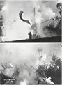
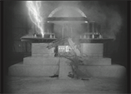
WAR(1)
If both phenomena, ‹destruction› and ‹auto-destruction›, are
placed in a social context, the view changes from game to bitter
earnest, from spectacle to deliberate annihilation, form aesthetic ritual to actual war. In the sixties there was socially speaking
every reason to take this game seriously and reassess the function of the artist with regard to society. Ecological, racial, political and democratic movements demanded a re-evaluation of
the social institutions in force at the time, and art was assigned
a strongly provocative, theatrical task. Fluxus, happening, performance, Aktion, event and musical theatre became new forms
in which resistance, protest, commentary and provocation could
take shape. It goes without saying that the display of destruction,
decollage, deconstruction and annihilation played an important
role in all of this. By means of constructing models for artistic destruction, art could measure up to reality, or, better put, ‹measure› reality. To do so, art had to make a link with reality, without
getting too much involved or over-identifying with it. (That the
danger of a certain over-identification is not merely imaginary,
was proved by some fanatical futurist artists who in 1914, driven
by an overstrained impression of things, actually entered the
First World War, never to return.)
Most of the Destruction Art artists from the sixties and seventies
wanted to reassess the traditional, ancient duality, creation versus destruction, or, if you want, life versus death. They put this intention to practice by violently colliding both terms of the duality
within an artistic environment. (Theatre.) They strove to move existing art institutions toward both theoretical discussions and actual performances on a laboratory scale, in order to achieve the
reassessment concerned. It is typical that this once again involved
the mobilisation of ‹hard› scientific powers for the sake of ‹soft›,
for unselfish, artistic purposes. ¶
WAR(2)
The originally Polish artist Gustav Metzger developed one of the
first clear ideas about the meaning and presentation of destruction within an artistic context. It was his aim to start a dialogue
on equal footing between, on the one side, social and political
practice, and on the other side, aesthetic and artistic institutions.
To do so, he wanted to subject the phenomenon of ‹destruction›
to a more detailed inspection on a laboratory scale. In a number
of manifestos written between 1959 and 1964, he laid the foundation for what he surprisingly didn’t qualify as Destruction Art, but
rather as Auto-Destruction Art.
By means of Auto-Destruction Art, Metzger wants to make us
aware of the loss of our civilisation in general and specifically
of the industrial and social destruction armamentarium. He
wants to make us experience its mechanics as physically as possible with the aid of theatrical and ritual means in the shape of
motion, image, construction, and sound. In no case, Metzger
is concerned with the display of aesthetics, nor with a method
or technique as such. His form of auto-destruction resists any
form of abstraction of destructive behaviour and wishes largely
to distance itself from the way in which our western technological thought is used to address destruction as something self-evident (fig. 20).
In order practically to apply these ideas, Metzger thought of establishing specifically constructed monuments, which would have to
be situated on international locations. High-quality technological
and electronic equipment would have to be placed in the interior
of those monuments, which would cause the structures, including their hardware and software, to implode and auto-destruct
‹by themselves› at certain predetermined moments. Depending
on the type of monument their deterioration would be realised
within at least twenty seconds or at most twenty years. The monuments would have to be both on a physical and a social level ‹environmentally sensitive› and therefore able to react interactively.
The technical realisation of those monuments would preferably
be achieved by means of a close cooperation between scientists
and artists; some sort of predecessor of the EAT (Experiments
in Art and Technology) ideal: an international organisation existing between 1966–1979, founded by the American artist Robert
Rauschenberg with the aim of arriving at a mutual exchange between both disciplines. It is interesting to elaborate to what extent the results of Metzger’s
Auto-Destruction Art differ practically from the kind of destruction that is caused during those outstanding manifestations of
technology, namely, wars. All in all, both things—Metzger’s
self-destructive ‹monuments› and whatever is destroyed during war—are emphatically different in a formational sense. By
definition, war is waged between two equal parties; contrarily,
Auto-Destruction is solely focused on one party, namely on the destroyer’s one. No matter how socially moved this destroyer
may appear, it is he who, free of any obligation and on his own,
chooses his ‹opponent› so as to be able to fire his corrective arrows at him. That opponent is preferably some kind of social defect that needs to be ‹repaired›, or for that matter, attacked. Thus,
in case of Metzger’s projects, we can ascertain a clear difference between both combatants as to their ‹class› and ‹type›; on
the one side the artist, and oppositely in front of him his subject
which is ‹common› property. Thus there is a big difference with
the real war in which both ‹classes› are well matched. Moreover,
war is concerned with destroying not oneself, but rather the opposite party, preferably until death.
In order to stage this type of ‹double construction›, in the early
eighties, a group of artists from San Francisco, ominously
named Survival Research Laboratories, decided to take up the
challenge and connect Destruction Art with an actual practice.
They did so by, in a certainly un-laboratory like manner, having
gigantic, robotic super-constructions wage a life-and-death
struggle. This involved actual ‹killing› and machines from both
sides perished in total annihilation: reality in optima forma as
metaphor and vice versa.
Auto-Destruction Art as advocated by Metzger however, is not aiming for death or near-death. On the contrary; this art form wants
to educate, teach, as well as cure and in the least destroy the onlooking party. If in the perpetration of destruction the formation
between destroyer and destructed is lost out of sight, any form of
destruction becomes senseless. And that’s precisely what AutoDestruction Art had in mind and wanted to ‹teach› us. All these
things will become clear once in the following paragraphs we inspect some variants related to auto-destruction in the sense of
‹auto-damage› a little bit closer. ¶
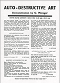
BODY ART
When forms of artistic destruction do not turn against third parties, but against the body proper, one speaks of Body Art. In this
case, the concept of ‹ destruction › has to be enlarged to include
‹ exhaustion ›, ‹ manipulation ›, ‹ confrontation ›, ‹ observation › and
‹ provocation ›. Body Art revolves around the mobilisation of the
human body as a ‹ playing fi eld ›, by subjecting that body to staged
destructive operations in front of an onlooking audience. Its
target is thoroughly to disturb the neutral consensus between
artist and audience. Through the exhaustive manipulation and
maltreatment of the human body, the body is promoted to the
material support of art, allowing it to comment, and, if need be,
vitalise the fi xed status of art by means of its externalised ‹ game
of signs ›. Thus, art and body are confronted with each other in
a way different from the usual one, and, if need be, unifi ed with
each other.
To do so, it is inevitable, even a condition, that the body suffers from
pain. This pain destroys language and speech, which it reduces to
randomly produced cries. On the playing fi eld on which the destruction of the body is happening, physical pain is displayed in
a staged form. The cries are ‹ music › audibly accompanying and
truthfully reporting the decline of the body. By thus eliminating
language, the body can return to its earliest, immaculate state.
Although not immediately associated with Body Art, there are many
artists who to this very date are obsessed with psycho-physical staging in which in the presence of onlooking and participating
audience the (naked) human body is subjected to an exhaustive
artistic treatment. Rituals, masses, Aktionen, but also video performances are the most proper forms of presentations to do so.
Of all artists who have approached the human body tachistically
in order to make it the central object of their art, the Viennese
artist Hermann Nitsch is without a doubt one of its most extreme
representatives. With his Orgien Mysterien Theater (fig. 21) he
transcended Body Art, managing to change it into an extremely
personal and unique ‹Theatre of Catharsis›.
A somewhat different type of example is provided by the work of the
Dutch performer Erik Hobijn. With his Self Arson Machines he
radicalises the connection between Body Art and self-destruction. Self Arson Machines are self-immolation (read: suicide)
machines on which candidates are allowed to take their position
so as subsequently to be ignited by the gigantic flame throwers
mounted on them. At the very last moment they are allowed to
reconsider and switch on a fire extinguishing installation. Hobijn
declares the following about such a ritual execution:
‹The Delusions of Self-Immolation (D.S.I.) is a machine with controllable self-arson. Manual: In the middle of the machine is a
revolving platform on which somebody can stand and hold two
grips. The person standing on the platform gets a jet of burning
liquid out of a flamethrower on his back, then the platform turns
halfway and the sacrifice human gets refreshed by the fire extinguisher with cold water; this can be repeated endlessly. The setting ablaze, the computer controlled swing and the extinction
can be started both by the person standing on the platform and
the computer. […] The D.S.I. is a cultivated utility tying psychological urges with the aesthetics of violence. The special thing
is that it translates psychological mechanisms into mechanical
self repeating ones. A robot that realises thoughts, expectations,
and emotions.›11
It is a question what would happen if it would not be our own body as
the target of the destruction, but if it would be used as a tool to affect and maltreat other living beings—e.g. animals—to such an
extent that they would die. By opting for ‹third parties›, the attack,
the self-exhaustion, may be executed even deeper, more painfully and also deadlier than would ever be possible or thinkable as regards our own body. This makes the choice for third parties
all the more attractive. Even though in case of auto-destructive
séances, the approach to death is by definition experienced in a
more extreme way than if it would threaten third parties. It is possible that destroying third parties is more ‹artistic›, because more
detached, than destroying oneself. It is perhaps this fact that is decisive in the final choice of the artist in question for the former option, and not the latter one. To be able to judge this question, we
will avail ourselves of the analysis of the following comparisons.
The types of ‹third parties› that qualify to be destroyed by artists, can
be roughly divided into three categories: lifeless materials, living
flora, and living fauna, the latter including living human beings.
In its turn, the first category—lifeless materials—can be split up
into, on the one side, unformed materials like stone, wood, metal,
and water and on the other side, formed materials like pianos,
cars, valuable Chinese vases and the like (fig. 22). We have amply
discussed the destruction of the latter group—formed ‹lifeless›
materials—above.
If we would turn to the representatives of the second category—living flora like plants, trees, moss, and flowers—it is well-nigh selfevident that they are not really rewarding object on which to let go
of our lust for destruction. For during its maltreatment, this category of living beings refrains from any comment. (They suffer in silence.) True, one can burn or consume them, but one only does so
in order comfortably to sit next to their fire, or otherwise to satisfy
one’s hunger. In short, things not belonging to art but to survival.
The third category—living fauna—can be much more effectively
destroyed than living flora. Contrary to the members of the former category, living beings give ample commentary on the destroyer’s destruction work in the form of cries, blood, stench,
coagulation and death. It makes ‹sense› to physically attack this
category. The destroyer feels that his labour has an effect; that he progresses by dissolving the living object until the arrival of
83
death. He gets something in return for his labour—something
artistic, namely immediate ‹resistance›, without any interference of legal systems, juridical rules or any ethical restriction whatever. While destroying, the artist makes his own rules
and acts accordingly. He literally doesn’t care about any other
norms than artistic ones.
In this independent capacity, the artist can freely cut in half with a
chain saw any animal that he sees fit (fig. 23). By splitting the ‹slices›
widely apart, he can offer the honourable audience a glance into
the ‹closed interior work› of the formerly living organism. The animal ‹opens› its former closed state in order to confront the spectator with death; death as the ultimate consequence of its former
‹open› life. It is only in this form that the animal, all sliced up, can
be publicly shown, within the closed circuit of the art world, as a
‹closed›, because collectable, art work.
Still, the ‹opening› of animals as an artistic act, even if this already
partially happens in the closed environment of slaughterhouses
and such, is a lost cause—not only for the animal in question, but
also for the artist concerned. For it is impossible to escape the irrevocability of the formational mechanism regulating this type of
destructive enterprises, even though the artist in his role of ‹artbutcher› really tries to convey the transition from being-still-alive
to being-motionlessly-dead in the form of ‹exclusively art› to the
interested public. That’s why the artist is left with little more than
waging a paper war against the representatives of actual reality, which think that they have to reject his actions on ethical or
whichever other grounds. During this battle, the artist functions,
although he consistently shows himself differently to the public,
as a juggler, balancing on the thin dividing line between demand
and supply, between attraction and repulsion, and between the
transformation of art into reality and reality into art. By the way, his move is not isolated, but also has a necessary
influence on the role of the spectators. During the artist’s destruction séances they are not in the least, as one would expect,
emancipated as active participants, but have cheapened themselves by taking up a position as passive observers. That’s why
at this very moment the sliced animals are hanging side by side
with the paintings of the old masters on walls of galleries and
museums, to be consumed in peace and contemplative quiet by
its ‹customers›. Thus, with his attitude, the destructive artist wittingly has fully restored the usual and familiar formation of art
production, most conventions of which can be traced back to the
nineteenth century. With his dubious behaviour he has irrevocably catapulted himself back into the safe art scene of yore.
Be that as it may, with the execution of living animals, the circle of
‹destruction as art› is closed. The artistic act of the killing of animals has at that moment been overstrained and therefore mutated into a form of reality; namely the reality of death. Art tumbles
from the platform of life, of our life, and rushes into unfathomable
depths. That’s where we literally lose sight of art. ¶
11. Lydia Lunch, Z’ev, erik hobijn. x/ix. Linz: ars electronica (1991).
CONCLUSION
From the above, it turns out that the manifestations of annihilation of Destruction Art initially were meant visibly and sensibly
to connect the element of action in the presentation of art with
social life itself. This intention was usually realised by staging and
ritualizing art in order to promote the artistic act itself—and
for once not one or the other static, because artistic, final products—to a genuine work of art. By thus identifying ‹art› with ‹life›,
the artist-destroyer hoped to be able to comment on, provoke,
influence, change, and, if necessary, eliminate that life from his
perspective as artist.
The essential condition for a meaningful achievement of the correspondence between art and life is the demolition of the high, cultural thresholds, which both art and life eventually built up around
themselves. High ‹masterly› art is too layered and too complicated, and therefore not modelled enough, to be able meaningfully to
interact with a world which qua complexity is fit together at least
as ‹highly› and ‹masterfully› as art. If a mutual, interactive correspondence between two opposite members is to be meaningful,
such a connection requires on both sides factors that are related,
and can therefore be exchanged. Those factors have to be simple,
univocal, thus operable before anything else. Without them, no
real communication can happen between both members; maybe
some specimens of more or less vague induction, but no communication on the level of language and speech. And, in spite of the
‹destructive character› of the destructivists, the latter is what they
wished to strive for in the end: making their ideas and views communicable on the level of speech, so as to be able to influence the
other parties involved. For let’s be fair, the only remaining alternative (forced) influence of one high member on another is called
war. On the level of war, and therefore destruction and annihilation, any wish to infiltrate, penetrate, annex, and impose one’s will
is immediately granted. All of those are indeed forms of communication, but don’t ask the price that has been paid for them.
All in all, real mutual influence doesn’t imply a destructive, but in
fact a highly constructive approach. And to do so, to do the latter, ‹language› is the tool of choice. That’s what the artists who,
in the sixties, considered destruction of paramount importance,
understood. For if one would check their publications and proclamations, it is surprising to what extent they emphatically desired to subject the language used by the world, especially in case of issues like war, ecology, decay and exploitation, to closer
research.
And now that we have mentioned research, it is in any case striking to what extent the destructivists have tried at all costs to present their vigorous activities as a form of research. In their texts,
one constantly encounters a certain longing for doing research
on a laboratory level, but without exactly indicating how to provide solutions, which indeed should follow from their investigations. But art is just barely or not equipped to do so, to provide
solutions that is. Art doesn’t offer any solutions but only generates
problems. And it is beyond doubt that the destructivists too have
been conscious of this flaw. But their desire for research is not just
concerned with the result, but with action. And this, not years on
end, but momentarily, explosively, and preferably, provocatively.
Research like ‹theatre›, not like ‹monastery work›; that’s what it is
all about in the end.
To meet the above demand to arrive at a lowering of the cultural
threshold in order to start making art communicable to the world
and vice versa, the deconstructivists actually showed themselves
prepared to reduce their objects, but especially also their actions,
to an archetypical level. And as for the big world, they have managed, on exactly the same bases, to reduce it to just as radical,
prototypical proportions as those pertaining to the world of their
own art. The big world has now become well-organised, for she
is stigmatised with almost exclusively ineradicable troubles and
flaws. Thus, the deconstructionists energetically can start cutting
out all the rotten spots. The problem of this approach is that art
ceases to be ‹art› and the world ceases to be ‹world› Interaction is
nice, but one has to make the necessary sacrifices, and those sacrifices exactly concern the aforementioned lowering of thresholds, or, if you want, lowering of the level. A vicious circle from
which it is impossible to escape.
Nevertheless, it is difficult for us not to take seriously the destructive artists from the sixties concerning their targets and ideals.
Perhaps because the ‹mechanics› to which the behaviour of the
destructive character unrelentingly is subjected also determines
a large part of the practical activities of the group of destructivists.
For this character dictates that there is no room for dreams, but
only for reality; less room for ideals, but all the more room for real
practice, even if that practice is not exclusively reserved for destructive violence. Their search for an essentially impossible bond
between soft, artistic ideal, and hard reality lends the original destructivists an endearing, but nonetheless ‹serious› image,
87
that is, when viewed from the direction of art, and not from reality. The latter one goes on undisturbed, which is proper to reality.
In the above, we have tried to address as conscientiously as possible the workings of the destructive character. We have tried to
perform our task without giving a too personally motivated interpretation of this art movement which is most difficult to classify.
This task was all the more heavy for us because, especially in the
case of this thematic, we felt the strong urge to declare war on
our ‹cursed common sense›—that ‹cursed intellect›—which constantly tries to reduce the essentially irrational ‹destructive character› to comprehensible proportions. We leave it to the reader to
trace our engagement between the lines and to judge its merits. ¶